叢集效度導論：外部／內部／相對
▼🤖 AI 生圖可用：重繪此示意圖的提示詞（結構化）
# AI 生圖提示詞 — kp-1 叢集效度三條路 ## WHAT 畫一張「一分三岔」的幾何示意圖：上方同一份兩團分群 C（同一組散點＋兩色橢圓）。三支箭頭分岔到下方三欄——左欄把同一點雲再疊一套獨立著色 P（切法可不同），中欄畫點間「近＝粗線／遠＝虛線」並附迷你接近矩陣熱圖，右欄並排參數 A 的兩團與參數 B 的三團。底部紅底橫幅寫「沒有唯一正確效度」。 ## WHY 必須讓讀者一眼看出因果：效度不是單一分數，而是同一 C 可走三條完全不同的問題路徑——外部問「跟獨立 P 合不合」、內部問「跟資料遠近貼不貼」、相對問「改參數後誰比較乾淨」。反直覺：漂亮指標若選錯方向仍答非所問。遮住文字後仍應看出「同一起點 → 三種比法」。 ## MUST show - 上方單一 C（兩團點雲）為共用起點。 - 三岔視覺：外部＝C vs 另一套著色 P；內部＝距離線／接近矩陣；相對＝兩種參數切法並排。 - 底部明確反直覺：「沒有唯一正確效度／三條路問的問題不同」。 - 繁中標籤；用 svg-panel；不要 LaTeX $。 ## AVOID - 禁止名詞連連看（三個方框寫「外部／內部／相對」再用箭頭互連）。 - 不要只寫定義句、沒有點雲／距離／參數對照的幾何。 - 不要暗示「某一條永遠最正確」。 - 不要 class="card"；不要外鏈字體。 ## STYLE 扁平教學示意，主題色 amber #d97706 / #b45309，背景 #fffbeb，圓角 svg-panel，分岔箭頭承載因果，底部用淺紅強調反直覺，繁中。
一句話
多數分群演算法就算資料沒有真正結構，也會硬塞出一堆叢集；所以在解讀結果前，要先問「有沒有分群傾向」，再問「這次算出來的 $\mathcal{C}$ 靠不靠譜」——後者就是本章的叢集效度（cluster validity）。
是什麼
前面幾章的演算法有個共同癖好：它們會把分群結構強加到資料集 $X$ 上。若 $X$ 其實沒有那種結構，跑出來的結果就不能代表 $X$ 的真實樣貌——分群分析不是萬靈丹。因此，在套用演算法之前，最好先有跡象顯示向量真的成群；「不先找出群、只驗證 $X$ 有沒有分群結構」這件事叫clustering tendency（分群傾向），章末再詳談。
就算確認 $X$ 有結構、想把它挖出來，麻煩還在：所有演算法都要參數，有些還限制叢集形狀（緊密、超橢球等）。參數估偏、形狀假設不對，就會對 $X$ 的結構下錯結論。因此，對演算法產出做進一步的量化評估很有必要——這整套工作統稱叢集效度。不過要強調：這些方法只是專家手邊的工具，用來輔助判斷結果，不是自動判官。
令 $\mathcal{C}$ 表示對 $X$ 套用分群演算法後得到的結構。它可以是階層式的一連串劃分（階層演算法的情況），也可以是單一叢集劃分（前面章節多數演算法的情況）。評估 $\mathcal{C}$ 大致有三個方向：
- 外部準則（external criteria）：拿一個獨立給定、事先加在 $X$ 上、反映你對結構直覺的劃分來評 $\mathcal{C}$。外部準則也可在「根本沒跑分群演算法」的情況下，衡量現有資料有多符合某個預先指定的結構。
- 內部準則（internal criteria）：只用 $X$ 本身的量（例如接近矩陣）來評 $\mathcal{C}$。
- 相對準則（relative criteria）：把 $\mathcal{C}$ 跟「同一演算法改參數」或「換成別的演算法」得到的其他結構互相比較。
基於外部或內部準則的效度方法，會依賴第 5 章引入的統計假設檢定；下一節先補一些本章會用到的定義。
為什麼
若不問「資料有沒有結構」就直接相信演算法輸出，等於把「演算法強加的形狀」誤當成「資料真有的形狀」。外部／內部／相對三條路回答的問題不同：你有獨立標籤劃分時走外部；只有資料本身時走內部；想挑參數或算法時走相對。先選對方向，後面的指標與檢定才有意義。
怎麼用 / 怎麼記
- 先傾向、再效度：clustering tendency（章末）→ cluster validity（本章）。
- $\mathcal{C}$ 兩種長相：階層（一棵樹）或單一劃分（一刀切）。
- 三方向口訣：外部＝對獨立劃分 $\mathcal{P}$；內部＝用資料本身（如接近矩陣）；相對＝改參數／改算法互比。
- 心態：效度指標是專家工具，不是自動真理。
原文把叢集效度分成哪三個方向？
關於 $\mathcal{C}$ 與 clustering tendency，下列哪一項符合原文？
假設檢定複習：檢定力、型一／型二、單雙尾、Monte Carlo／bootstrap
▼一句話
效度檢定的骨架還是假設檢定：$H_0$／$H_1$、臨界區、檢定力 $W(\boldsymbol{\theta})$，以及型一誤差 $\rho$、型二誤差 $1-W$；pdf 不好求時，用 Monte Carlo 或 bootstrap 估分布再決定拒不拒絕。
是什麼
令 $H_0$、$H_1$ 分別為虛無與對立假設，例如 $$ H_1:\boldsymbol{\theta}\neq\boldsymbol{\theta}_0,\qquad H_0:\boldsymbol{\theta}=\boldsymbol{\theta}_0. $$ 對檢定統計量 $q$，令 $\bar{D}_{\rho}$ 為顯著水準 $\rho$ 下的臨界區間（critical interval），$\Theta_1$ 為 $H_1$ 下 $\boldsymbol{\theta}$ 所有可能值的集合。檢定的檢定力函數（power function）定義為（式 16.1） $$ \begin{equation*} W(\boldsymbol{\theta})=P\bigl(q\in\bar{D}_{\rho}\mid\boldsymbol{\theta}\in\Theta_1\bigr). \tag{16.1} \end{equation*} $$ 對特定 $\boldsymbol{\theta}\in\Theta_1$，$W(\boldsymbol{\theta})$ 叫「在該對立下的檢定力」——白話就是：$H_0$ 該拒時，真的把 $q$ 打進臨界區、做出正確決定的機率。比較兩個檢定時，對立下檢定力較大的較受青睞。
兩種錯誤：
- 型一誤差（type I）：$H_0$ 為真，但 $q(\boldsymbol{x})\in\bar{D}_{\rho}$ 仍拒絕。機率是 $\rho$。$H_0$ 為真時接受的機率是 $1-\rho$。
- 型二誤差（type II）：$H_0$ 為假，但 $q(\boldsymbol{x})\notin\bar{D}_{\rho}$ 仍接受。機率是 $1-W(\boldsymbol{\theta})$，依具體 $\boldsymbol{\theta}$ 而定。
實務上多數 $q$ 在 $H_0$ 下的 pdf 只有一個峰，$\bar{D}_{\rho}$ 是半線或兩條半線的聯集（本章也採這假設）。Figure 16.1 畫了三種臨界區：雙尾（兩條半線）、右尾、左尾（各一條半線）；圖中 $q_a^0$ 是 $H_0$ 下 $q$ 的 $a$ 百分位。
很多時候 $H_0$ 下 $q$ 的精確 pdf 求不出來，於是用模擬估：
- Monte Carlo：用夠多電腦產生的資料模擬該過程。對 $r$ 個資料集 $X_i$ 各算一個 $q_i$，用直方圖近似未知 pdf。右尾：若觀測 $q$ 大於 $(1-\rho)r$ 個 $q_i$ 則 reject（否則 accept）。左尾：若 $q$ 小於 $\rho r$ 個 $q_i$ 則 reject。雙尾：若 $q$ 大於 $(\rho/2)r$ 個且小於 $(1-\rho/2)r$ 個 $q_i$ 則 accept。
- Bootstrapping：資料有限時的另一條路——把未知 pdf 用未知參數參數化，再從 $X$ 有放回抽樣做出假資料集 $X_1,\ldots,X_r$ 來改善估計。典型上 $r$ 取 $100$–$200$ 可得不錯估計。
實務拒／接受 $H_0$ 還會摻成本等因素，「接受／拒絕」要依情境解讀。
為什麼
效度指數再漂亮，若不知道「在純隨機下它會長怎樣」，就無法判斷「大到不尋常」還是「小到不尋常」。檢定力告訴你對立為真時抓得到的機率；Monte Carlo／bootstrap 則是 pdf 難求時的救命繩。臨界區選雙尾還是單尾，取決於你預期異常出現在一側還是兩側。
怎麼用 / 怎麼記
- 式 (16.1)：$W=$「對立為真時 $q$ 落進臨界區」的機率＝正確拒絕的機率。
- 型一口訣：真 $H_0$ 卻拒 → 機率 $\rho$；假 $H_0$ 卻接受 → 機率 $1-W$。
- Fig 16.1：雙尾兩半線；右尾／左尾各一半線。
- MC 門檻：右尾比 $(1-\rho)r$；左尾比 $\rho r$；雙尾兩端 $(\rho/2)r$ 與 $(1-\rho/2)r$。
- Bootstrap：有放回；$r$ 典型 $100$–$200$。
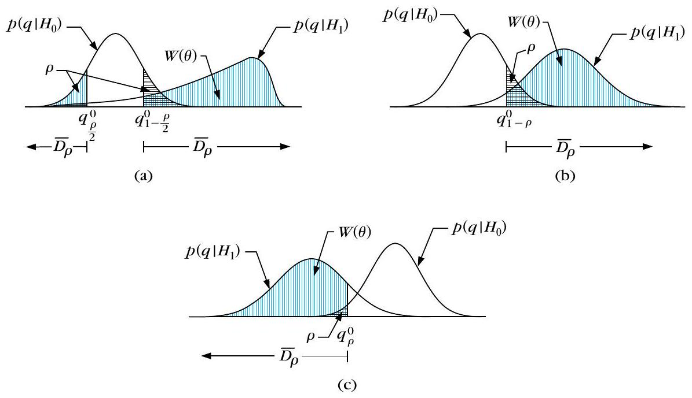
- 右尾：若 $q$ 大於 $(1-\rho)r$ 個 $q_i$ 則 reject（否則 accept）。
- 左尾：若 $q$ 小於 $\rho r$ 個 $q_i$ 則 reject。
- 雙尾：若 $q$ 大於 $(\rho/2)r$ 個且小於 $(1-\rho/2)r$ 個 $q_i$ 則 accept；否則 reject。
式 (16.1) 的檢定力 $W(\boldsymbol{\theta})$ 在說什麼？
Monte Carlo 右尾檢定，在顯著水準 $\rho$、共 $r$ 個模擬值時，何時拒絕 $H_0$？
分群效度的假設檢定：隨機位置／圖／標籤
▼一句話
在叢集效度裡，$H_0$ 改寫成「$X$ 的結構是隨機的」；先做出符合隨機假設的參考族群，再定義能反映結構的統計量 $q$，把真實 $X$ 的 $q$ 跟隨機參考比——異常大或異常小就拒 $H_0$。
是什麼
這裡的重點不再是「某個參數等不等於某個數」，而是「$X$ 有沒有『隨機』結構」。因此 $H_0$ 應是關於 $X$ 結構隨機性的陳述。目標變成兩件：
- 在隨機假設下產生參考資料族群（模擬隨機結構）。
- 定義適當的統計量 $q$（其值能反映資料集結構），把 $X$ 得到的 $q$ 與參考（隨機）族群上的值比較。
產生參考族群有三種常見做法，適用情境不同：
- Random position（隨機位置）假設：適合比率尺度（ratio）資料。要求「在 $l$ 維空間某特定區域裡，$N$ 個向量的所有排列同樣可能」——區域可以是超立方 $H_l$ 或超球。做法之一：依均勻分布把每個點隨機丟進該區域。此假設可用於外部或內部準則。
- 內部：$q$ 衡量「演算法產出的結構」與「該資料接近矩陣」有多吻合。對每個依隨機位置產生的 $X_i$（接近矩陣 $P_i$）與真實 $X$，跑同一演算法得 $\mathcal{C}_i$、$\mathcal{C}$，各算 $q$；若來自 $X$ 的 $q$ 落在參考族群 pdf 的臨界區 $\bar{D}_{\rho}$（異常小或大），就拒 $H_0$。
- 外部：$q$ 衡量事先指定的結構 $\mathcal{P}$ 與「對 $X$ 跑某演算法得到的分群」有多對應。把 $X$ 的 $q$ 拿去跟隨機位置參考族群上各 $\mathcal{C}_i$ 的 $q_i$ 比；同樣，$q$ 異常大或小就拒隨機假設。
- Random graph（隨機圖）假設：通常在只有內部資訊（向量本身或其關係）時採用，適合序數接近度（ordinal proximities）。定義秩序矩陣 $A$：對稱、對角為 0（若用相異度），上三角元素是 $[1,N(N-1)/2]$ 的整數，只給「誰比較像」的質性訊息。無結的參考族群：把 $1$ 到 $N(N-1)/2$ 隨機填進上三角。對真實序數接近矩陣 $P$ 與各 $A_i$ 跑同一演算法，用 $q$ 量「秩序矩陣與分群結構」的一致性；異常則拒 $H_0$。注意：隨機圖假設不適合比率尺度資料（歐氏距離等會有幾何三角限制，任意秩矩陣未必是合法接近矩陣）。
- Random label（隨機標籤）假設：考慮把 $X$ 分成 $m$ 群的所有劃分 $\mathcal{P}'$（可用映射 $g:X\to\{1,\ldots,m\}$ 表示），假設所有映射同等可能。$q$ 衡量資料固有資訊（如接近矩陣 $P$）與某劃分的吻合度；用來檢驗「$P$ 與外部強加的 $\mathcal{P}$」相對「隨機標籤產生的劃分」是否異常吻合。
後文會先給外部、再給內部準則常用的統計指數。
為什麼
效度問題本質是「跟隨機比，你的結構夠不夠不尋常」。三種隨機假設對應三種資料／資訊型態：有座標的比率資料用隨機丟點；只有序數關係用隨機秩圖；要檢驗外部標籤是否跟接近結構吻合用隨機重貼標籤。選錯假設（例如對比率資料硬套隨機圖）會做出不合法的參考矩陣，檢定就失真。
怎麼用 / 怎麼記
- $H_0$＝隨機結構（不是「參數＝某值」）。
- 兩步：造隨機參考族群 → 定義 $q$ → 真實 vs 參考。
- 三假設：position（比率、均勻丟點；內／外皆可）／graph（序數接近）／label（隨機重貼 $m$ 群標籤）。
- internal vs external（在 random position 下）：內部比「結構 vs 接近矩陣」；外部比「預先 $\mathcal{P}$ vs 演算法分群」——都是拿 $X$ 的 $q$ 對 $q_i$ 看是否異常。
Random position 假設主要適合哪種資料？產生參考點的典型做法是？
在 random position 下，內部準則與外部準則的 $q$ 分別在比什麼？
外部準則：Rand／Jaccard／FM／Hubert $\Gamma$（Ex 16.1–16.2）
▼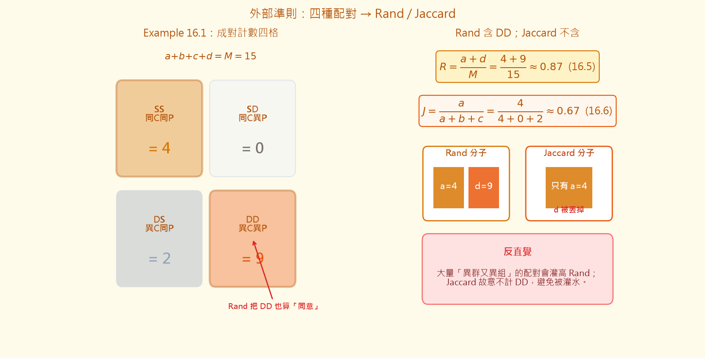
🤖 AI 生圖可用：重繪此示意圖的提示詞（結構化）
# AI 生圖提示詞 — kp-4 SS/SD/DS/DD → Rand / Jaccard ## WHAT 左右對照科學圖：左欄 2×2 成對計數格（SS=a=4、SD=b=0、DS=c=2、DD=d=9，對齊 Example 16.1），右欄標出公式 R=(a+d)/M（16.5）與 J=a/(a+b+c)（16.6），並用色塊對比「Rand 分子含 a+d、Jaccard 分子只有 a」。底部紅框寫反直覺：DD 會灌高 Rand。 ## WHY 因果：四種配對把兩個劃分的同意／不同意拆開；Rand 把「兩邊都同意異群」的 DD 也算對，所以大量異群配對會灌分。Jaccard 丟掉 d，避免灌水。遮住文字後仍應看出左格有大塊 DD、右邊 Jaccard 不吃那一塊。 ## MUST show - a=4,b=0,c=2,d=9 與 M=15。 - 公式 (16.5)(16.6) 與數值約 R≈0.87、J≈0.67。 - 視覺強調 Rand 含 DD、Jaccard 不含。 - 反直覺標註。 ## AVOID - 名詞連連看（方框串 SS→Rand）。 - 漏掉 DD 或把 Jaccard 也寫成含 d。 - 無關裝飾圖表。 ## STYLE 科學對照圖，主題色 amber #d97706/#b45309，背景 #fffbeb，中文＋mathtext 公式，扁平清楚。
一句話
外部準則拿獨立劃分 $\mathcal{P}$ 跟演算法分群 $\mathcal{C}$ 比：先數成對點的 SS／SD／DS／DD，再算 Rand、Jaccard、FM、Hubert $\Gamma$（與標準化 $\hat{\Gamma}$）；愈大愈吻合，檢定多半走右尾。Example 16.2 展示「團愈糊，愈難拒隨機 $H_0$」。
是什麼
外部準則用於：(a) 比較演算法得到的 $\mathcal{C}$ 與獨立抽出的劃分 $\mathcal{P}$；或 (b) 衡量預先劃分 $\mathcal{P}$ 與接近矩陣的吻合（下一張知識點）。實務上很少有「預先指定的整棵階層」，所以驗證階層樹較少見；以下聚焦「某個演算法產出的單一劃分 $\mathcal{C}$」對「獨立 $\mathcal{P}$」。
令 $\mathcal{C}=\{C_1,\ldots,C_m\}$、$\mathcal{P}=\{P_1,\ldots,P_s\}$（$m$ 不必等於 $s$）。$n_{ij}$ 是同時屬於 $C_i$ 與 $P_j$ 的向量數；$n_i^{C}=\sum_j n_{ij}$、$n_j^{P}=\sum_i n_{ij}$。
對一對向量 $(\boldsymbol{x}_v,\boldsymbol{x}_u)$ 分類：
- SS：在 $\mathcal{C}$ 同群且在 $\mathcal{P}$ 同組；
- DD：在 $\mathcal{C}$ 異群且在 $\mathcal{P}$ 異組；
- SD：$\mathcal{C}$ 同群、$\mathcal{P}$ 異組；
- DS：$\mathcal{C}$ 異群、$\mathcal{P}$ 同組。
令 $a,b,c,d$ 分別為 SS、SD、DS、DD 的對數，則 $a+b+c+d=M$，其中總對數 $M=N(N-1)/2$。
Example 16.1：$N=6$，$\mathcal{C}=\{\{\boldsymbol{x}_1,\boldsymbol{x}_2,\boldsymbol{x}_3\},\{\boldsymbol{x}_4,\boldsymbol{x}_5\},\{\boldsymbol{x}_6\}\}$，$\mathcal{P}=\{\{\boldsymbol{x}_1,\boldsymbol{x}_2,\boldsymbol{x}_3\},\{\boldsymbol{x}_4,\boldsymbol{x}_5,\boldsymbol{x}_6\}\}$。由表得 $a=4$、$b=0$、$c=2$、$d=9$。
再令 $m_1=a+b$（$\mathcal{C}$ 同群的對數）、$m_2=a+c$（$\mathcal{P}$ 同組的對數）。常用指數：
- Rand（式 16.5）：$R=(a+d)/M$ —— SS 與 DD 佔總對數的比例。
- Jaccard（式 16.6）：$J=a/(a+b+c)$ —— 同哲學但排除 $d$。
- Fowlkes–Mallows（式 16.7）： $$ \begin{equation*} FM=a/\sqrt{m_1 m_2}=\sqrt{\frac{a}{a+b}\,\frac{a}{a+c}}. \tag{16.7} \end{equation*} $$
$R$、$J$ 介於 $0$ 與 $1$；要達到最大值通常需要 $m=s$（一般未必成立）。以上指數都是愈大愈吻合，對應統計檢定皆為右尾。
Hubert $\Gamma$（式 16.8）量兩個獨立 $N\times N$ 矩陣 $X,Y$ 的相關（對稱時對上三角平均）： $$ \begin{equation*} \Gamma=(1/M)\sum_{i=1}^{N-1}\sum_{j=i+1}^{N} X(i,j)Y(i,j). \tag{16.8} \end{equation*} $$ 標準化版 $\hat{\Gamma}$（式 16.9）把上下三角元素中心化再除以 $\sigma_X\sigma_Y$，值在 $-1$ 與 $1$ 之間。若令 $X(i,j)=1$ 當兩點在 $\mathcal{C}$ 同群否則 $0$，$Y$ 對 $\mathcal{P}$ 同理，則（式 16.10） $$ \begin{equation*} \hat{\Gamma}=(Ma-m_1 m_2)/\sqrt{m_1 m_2(M-m_1)(M-m_2)}. \tag{16.10} \end{equation*} $$ $\lvert\Gamma\rvert$（或 $\lvert\hat{\Gamma}\rvert$）異常大表示 $\mathcal{C}$ 與 $\mathcal{P}$ 吻合。
精確 pdf 難求，實務用 Monte Carlo＋random position（比率資料）：對 $i=1..r$ 均勻產生 $X_i$、依 $\mathcal{P}$ 把標籤貼到對應位置、跑同一演算法得 $\mathcal{C}_i$、算 $q(\mathcal{C}_i)$，再畫直方圖，依 §16.2 規則決定拒不拒絕。
Example 16.2（isodata，$m=4$，$r=100$，$\rho=0.05$；$H_3$ 上四團各 25 點）：
- (a) 緊密（共變 $0.2I$）：$R=0.91$，$J=0.68$，$FM=0.81$，$\hat{\Gamma}=0.75$；四者皆大於全部 $100$ 個對應 $q_i$ → 皆 reject $H_0$。
- (b) 較散（$0.6I$）：$R=0.64$，$J=0.15$，$FM=0.27$，$\hat{\Gamma}=0.03$；$R$ 大於 $99$ 個 $R_i$，$\hat{\Gamma}$ 大於 $98$ 個 → Rand 與 $\hat{\Gamma}$ reject；$J$、$FM$ 各只大於 $94$ 個 → 不 reject。說明邊界情況下不同指數可能結論不同。
- (c) 幾乎無結構（$0.8I$）：$R=0.63$，$J=0.14$，$FM=0.25$，$\hat{\Gamma}=-0.01$；相對模擬值都不夠極端 → 皆不 reject。
Remark（校正統計量）：對每個 $q$ 可定義校正版（式 16.11） $$ \begin{equation*} q'=\frac{q-E(q)}{\max(q)-E(q)}, \tag{16.11} \end{equation*} $$ 其中 $E(q)$ 是 $H_0$ 下期望，$\max(q)$ 是可能最大值；$q'\in[0,1]$。完美吻合時可達最大，若 $\mathcal{C}$、$\mathcal{P}$ 純屬碰巧則趨近最小。難題是估 $E(q)$ 與 $\max(q)$（Rand、FM 各有文獻處理）。
為什麼
成對計數把「兩個劃分一不一致」拆成四種配對故事；$a+d$ 是「兩邊都同意同群或都同意異群」的票數，所以 Rand 直觀。Jaccard 丟掉 $d$，避免「異群異組」的大量配對把分數灌水。FM 把「$\mathcal{C}$ 同群裡有多少真的也在 $\mathcal{P}$ 同組」與對稱的另一邊幾何平均。$\Gamma$ 則是矩陣相關的語言。Example 16.2 提醒：團一糊，有的指數仍拒隨機、有的已不敢拒——選指數會影響結論。
怎麼用 / 怎麼記
- 四配對：SS→$a$，SD→$b$，DS→$c$，DD→$d$；$M=N(N-1)/2$。
- Ex 16.1：$a=4,b=0,c=2,d=9$。
- 公式：$R=(a+d)/M$；$J=a/(a+b+c)$；$FM=a/\sqrt{m_1 m_2}$；右尾。
- $\hat{\Gamma}$：式 (16.9) 一般形；同群 0/1 矩陣時化成式 (16.10)。
- Ex 16.2 數字：(a) $0.91/0.68/0.81/0.75$ 全拒；(b) $0.64/0.15/0.27/0.03$ 僅 $R,\hat{\Gamma}$ 拒；(c) $0.63/0.14/0.25/-0.01$ 全不拒。
- 校正：$q'=(q-E(q))/(\max(q)-E(q))$。
Example 16.1 中 $a,b,c,d$ 分別是多少？Rand 統計量 $R=(a+d)/M$ 的 $M$ 是？
Example 16.2 在 $\rho=0.05$ 下，哪一段描述正確？
$\mathcal{P}$ 對接近矩陣：用 $Y$ 測外部標籤（Ex 16.3）
▼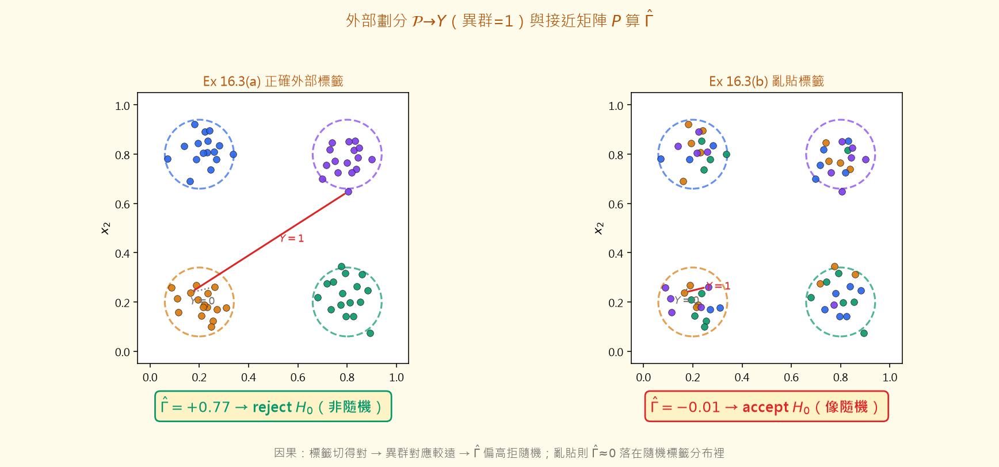
🤖 AI 生圖可用：重繪此示意圖的提示詞（結構化）
# AI 生圖提示詞 — kp-5 P 與接近矩陣的 Γ̂ ## WHAT 左右兩散點圖（四角四團，精神對齊 Ex 16.3）：左為正確外部標籤著色，右為亂貼標籤。圖上標 Y=1（異群連線）與 Y=0（同群），並分別標 Γ̂=0.77→reject、Γ̂=−0.01→accept。說明 Γ̂ 作用於接近矩陣 P 與 Y。 ## WHY 因果：Y 把「誰不同群」編成 0/1；正確標籤時異群往往較遠，P 與 Y 同向 → Γ̂ 高到拒隨機；亂貼則相關塌成≈0 而接受。反直覺：同一批點，只改標籤就能從 reject 變 accept。 ## MUST show - 四團幾何（均值約在四角）。 - Y(i,j)=1 若異群否則 0 的視覺。 - 正確 Γ̂=0.77 reject；亂劃 Γ̂=−0.01 accept。 - 公式／符號可用 mathtext。 ## AVOID - 只畫兩個矩陣方框互連的名詞連連看。 - 左右結論對調。 - 省略 reject/accept 對照。 ## STYLE 科學散點對照，amber #d97706/#b45309，背景 #fffbeb，繁中標註。
一句話
外部資訊 $\mathcal{P}$ 可看成把每個點映到標籤的映射 $g$；先用式 (16.12) 造出對稱矩陣 $Y$（不同群為 1、同群為 0），再把 Hubert 的 $\Gamma$（或 $\hat{\Gamma}$）作用在接近矩陣 $P$ 與 $Y$ 上——數值愈大，代表「標籤切法」愈貼近資料的距離結構。隨機標籤假設下用 Monte Carlo 產生許多 $g_i$，才能決定要 reject 還是 accept。
是什麼
這一節要回答：事先給定的分割 $\mathcal{P}$（外部資訊）跟資料的接近矩陣 $P$ 合不合？$\mathcal{P}$ 可看成映射 $g:X\to\{1,\ldots,m\}$。定義矩陣 $Y$ 的 $(i,j)$ 元素為（式 16.12） $$ Y(i,j)=\begin{cases}1,&\text{若 }g(\boldsymbol{x}_i)\neq g(\boldsymbol{x}_j)\\0,&\text{否則}\end{cases} $$ $i,j=1,\ldots,N$。$Y$ 顯然對稱。接著把 $\Gamma$（或標準化的 $\hat{\Gamma}$）套用在 $P$ 與 $Y$ 上；這個統計量就衡量 $Y$ 與 $P$ 的吻合程度。
要估 $\Gamma$（或 $\hat{\Gamma}$）在隨機標籤假設下的分布，產生 $r$ 個映射 $g_i$（$i=1,\ldots,r$），各自形成 $Y_i$，再對 $P$ 與每個 $Y_i$ 算 $\Gamma$（或 $\hat{\Gamma}$），然後依 §16.2 的臨界區決定接受或拒絕零假設。
Example 16.3：資料集 $X$ 有 64 個二維向量。前 16 點來自均值 $[0.2,0.2]^{T}$ 的常態；其餘三組各 16 點分別來自均值 $[0.2,0.8]^{T}$、$[0.8,0.2]^{T}$、$[0.8,0.8]^{T}$ 的常態。四組共變異皆為 $0.15 I$。$P$ 用平方歐氏距離。顯著水準 $\rho=0.05$。
- (a) 正確外部資訊：$\mathcal{P}=\{P_1,P_2,P_3,P_4\}$，四組 16 點依序分派。算得 $\hat{\Gamma}=0.77$。再產生 100 個隨機分割 $\mathcal{P}_i$，形成對應 $Y_i$ 並算 $\hat{\Gamma}_i$。結果 $\hat{\Gamma}$ 大於全部 100 個 $\hat{\Gamma}_i$ → 在水準 $\rho$ 下拒絕零假設（標籤不是隨機的，外部資訊與結構一致）。
- (b) 隨機指派：外部資訊把 16 點隨機分到每個 $P_i$，明顯對不上真實結構。同一流程得 $\hat{\Gamma}=-0.01$，小於 70 個 $\hat{\Gamma}_i$ → 接受隨機性假設。
為什麼
$Y$ 把「誰跟誰不同群」編碼成 0/1；$P$ 則編碼「誰跟誰遠近」。$\Gamma$ 類統計正是在問這兩張矩陣是否同向：正確標籤時，不同群的點在 $P$ 上往往較遠，對應 $Y=1$，相關偏高（本例 $\hat{\Gamma}=0.77$）；亂貼標籤時相關塌掉（本例 $-0.01$），落在隨機標籤的直方圖裡頭。
怎麼用 / 怎麼記
- 口訣：$Y$＝不同群寫 1（16.12）→ $\Gamma(P,Y)$ → 跟隨機標籤的 $\hat{\Gamma}_i$ 比。
- Ex 16.3 設定：64 點、四組各 16、均值四角、$\Sigma=0.15 I$、$\rho=0.05$。
- (a)$\hat{\Gamma}=0.77$ 大於全部 100 個 → reject。
- (b)$\hat{\Gamma}=-0.01$ 小於 70 個 → accept。
依式 (16.12)，矩陣 $Y$ 的 $(i,j)$ 元素如何定義？
Example 16.3 在 $\rho=0.05$、100 次隨機分割下，下列哪組敘述正確？
內部準則：dendrogram 貼不貼近 $P$（CPCC／$\gamma$／$\tau$）
▼一句話
內部準則只靠資料本身的接近矩陣 $P$，不問外部標籤。階層分群產出的樹可用共表型矩陣 $P_c$ 代表；用 CPCC、$\gamma$ 或 Kendall 的 $\tau$ 衡量 $P_c$ 與 $P$ 的吻合，再用 Monte Carlo（隨機位置或隨機圖）估零假設下的分布。
是什麼
§16.3.2 的目標：驗證演算法產出的分群結構是否貼合資料，資訊只來自資料本身。下文除非另述，資料以接近矩陣表示。兩大情形：(a) 結構是一層層階層；(b) 結構是單一叢集結果（下一知識點）。
階層效度：階層演算法的 dendrogram 對應共表型矩陣 $P_c$。$P_c$ 與 $P$ 皆對稱、對角為 0，故只看 $M\equiv N(N-1)/2$ 個上三角元素。記 $d_{ij}$、$c_{ij}$ 分別為 $P$、$P_c$ 的 $(i,j)$ 元素。
CPCC（cophenetic correlation coefficient，式 16.13）適用於區間／比率尺度，衡量 $P_c$ 與 $P$ 的相關： $$ CPCC=\frac{(1/M)\sum_{i=1}^{N-1}\sum_{j=i+1}^{N}d_{ij}c_{ij}-\mu_p\mu_c}{\sqrt{\bigl((1/M)\sum_{i=1}^{N-1}\sum_{j=i+1}^{N}d_{ij}^{2}-\mu_p^{2}\bigr)\bigl((1/M)\sum_{i=1}^{N-1}\sum_{j=i+1}^{N}c_{ij}^{2}-\mu_c^{2}\bigr)}} $$ 均值定義同式 (16.9)。CPCC 介於 $-1$ 與 $1$；愈接近 $1$，共表型與接近矩陣愈吻合。困難在於它依賴 $N$、演算法、接近度量等，$H_0$ 下 pdf 難求，需 Monte Carlo：依隨機位置假設產生 $r$ 組均勻散布的 $X_i$，對每組跑同一階層演算法，算 $P_i$ 與 $P_{c_i}$ 的 CPCC 再畫直方圖。
原文提醒（[Rolp 70]）：即使 CPCC 很高（接近 $0.9$），在 UPGMA 下仍要小心——這種高值未必保證 $P_c$ 與 $P$ 真正貼近。
$\gamma$ 統計（式 16.14）適合序數尺度。令 $\boldsymbol{v}_p$、$\boldsymbol{v}_c$ 為把 $P$、$P_c$ 上三角依列排成的長度 $N(N-1)/2$ 向量。一對元素對 $\{(v_{p_i},v_{p_j}),(v_{c_i},v_{c_j})\}$ 稱為：
- concordant（一致）：$(v_{p_i}\lt v_{c_i}$ 且 $v_{p_j}\lt v_{c_j})$ 或 $(v_{p_i}\gt v_{c_i}$ 且 $v_{p_j}\gt v_{c_j})$；
- discordant（不一致）：$(v_{p_i}\lt v_{c_i}$ 且 $v_{p_j}\gt v_{c_j})$ 或 $(v_{p_i}\gt v_{c_i}$ 且 $v_{p_j}\lt v_{c_j})$；
- 若 $v_{p_i}=v_{c_i}$ 或 $v_{p_j}=v_{c_j}$，則既非一致也非不一致。
記 $S_+$、$S_-$ 為一致／不一致對數，則 $$ \gamma=\frac{S_+-S_-}{S_++S_-} \tag{16.14} $$ $\gamma\in[-1,1]$。$H_0$ 下同樣難求 pdf，改用隨機圖假設：產生 $r$ 張無結的隨機秩接近矩陣 $P_i$，對每張跑同一演算法，算 $\gamma(P_i,P_{c_i})$ 再畫直方圖。
Example 16.4：$\boldsymbol{v}_p=[3,2,1,5,2,6]^{T}$，$\boldsymbol{v}_c=[2,3,5,1,6,4]^{T}$。全部 16 組「對的對」中，$S_+=6$、$S_-=9$，故 $\gamma=-1/5=-0.2$。
Remarks：
- 猜想 [Hube 74]：single／complete link 時，$N\gamma-a\ln N$ 近似標準常態；$a=1.1$（single）、$a=1.8$（complete）。若採信，可省掉 Monte Carlo。
- $\gamma$ 也可比較兩個不同階層演算法的結果。
另一個序數指標是 Kendall 的 $\tau$（式 16.15） $$ \tau=\frac{S_+-S_-}{N(N-1)/2} $$ 與 $\gamma$ 的差別：分母涵蓋所有「對的對」；$\gamma$ 則排除既非一致也非不一致者。
為什麼
階層結果若真抓住資料結構，$P_c$ 裡的「合併高度」應對齊 $P$ 裡的遠近——CPCC 看線性相關，$\gamma$／$\tau$ 看序關係。因為這些指數高度依賴問題細節，不能直接套固定臨界值，才需要 Monte Carlo 或（在特定演算法下）常態近似。
怎麼用 / 怎麼記
- 口訣：dendrogram → $P_c$；比 $P$ 用 CPCC（區間／比率）或 $\gamma$、$\tau$（序數）。
- CPCC→1 愈好，但 UPGMA 下即使接近 $0.9$ 也要謹慎。
- Ex 16.4：$S_+=6$、$S_-=9$、$\gamma=-0.2$。
- 常態捷徑：$N\gamma-a\ln N$；$a=1.1$（single）、$1.8$（complete）。
kp6-sep 改兩團距離；拉 kp6-alpha 把 $P_c$ 混向反序。
觀察什麼：sep 大且 α=0 時 CPCC 接近 1；α↑ 則 CPCC／γ 下降。
正確基準：α=0、分離良好 → CPCC 高；α=1 → CPCC 接近 −1。Ex 16.4 向量給 γ=−0.2。
關於 CPCC 與 Example 16.4 的 $\gamma$，下列何者正確？
依 Remarks，single／complete link 下關於 $N\gamma-a\ln N$ 的猜想，$a$ 如何取值？
內部準則：單一叢集結果用 $\Gamma$ 驗證（Ex 16.5）
▼一句話
當結構不是整棵樹、而是一個含 $m$ 群的單一叢集結果 $\mathcal{C}$ 時，仍可用接近矩陣 $P$ 當「資料內在結構」的代表：用式 (16.16) 依「是否同群」造 $Y$，再算 $\Gamma$（或 $\hat{\Gamma}$），並在隨機位置假設下跟許多隨機資料集的結果比。
是什麼
Validation of Individual Clusterings：檢驗給定的叢集結果 $\mathcal{C}$（含 $m$ 個叢集）是否吻合 $X$ 內在的資訊。仍以接近矩陣 $P$ 代表結構。定義 $Y$ 的 $(i,j)$ 元素為（式 16.16） $$ Y(i,j)=\begin{cases}1,&\text{若 }\boldsymbol{x}_i\text{ 與 }\boldsymbol{x}_j\text{ 屬於不同叢集}\\0,&\text{否則}\end{cases} $$ $i,j=1,\ldots,N$。$Y$ 對稱。把 $\Gamma$（或 $\hat{\Gamma}$）作用於 $P$ 與 $Y$，其值衡量 $P$ 與 $Y$ 的對應程度。
零假設採隨機位置假設：對每個隨機資料集 $X_i$ 算接近矩陣 $P_i$，再對每份資料跑「當初用來產生 $\mathcal{C}$」的同一演算法，得到 $m$ 群的 $\mathcal{C}_i$（$i=1,\ldots,r$），算對應的 $Y_i$ 與 $\Gamma_i$。最後依 §16.2 在顯著水準 $\rho$ 下決定拒絕或接受。
Example 16.5：$X$ 有 100 個向量，落在超立方體 $H_2$ 中，刻意形成四組、各 25 點。每組來自常態，共變異皆為 $0.1 I$，均值分別為 $[0.2,0.2]^{T}$、$[0.8,0.2]^{T}$、$[0.2,0.8]^{T}$、$[0.8,0.8]^{T}$。對 $X$ 跑 isodata，得叢集結果 $\mathcal{C}$。由對應的 $Y$ 與 $P$ 算得 $\hat{\Gamma}=0.5704$。接著產生 100 個在 $H_2$ 上均勻散布的隨機資料集 $X_i$，各跑 isodata 得 $\mathcal{C}_i$，再算 $Y_i$、$P_i$ 與 $\hat{\Gamma}_i$。結果：100 個 $\hat{\Gamma}_i$ 中有 99 個小於 $\hat{\Gamma}$ → 在 $\rho=0.05$ 下拒絕零假設（結構不像隨機）。
把共變異改成 $0.2 I$ 重做：此時 $\hat{\Gamma}$ 只大於 100 個 $\hat{\Gamma}_i$ 中的 86 個 → 在 $\rho=0.05$ 下不拒絕零假設（團變糊、效度訊號變弱）。
為什麼
單一叢集的 $Y$ 跟外部準則那張 $Y$（16.12）長得很像，差在標籤來源：這裡的標籤來自演算法產出的 $\mathcal{C}$，不是外部給定。隨機位置假設問的是：若點真的亂撒在空間裡、再硬跑同一演算法，還能得到這麼大的 $\hat{\Gamma}$ 嗎？團分得開（$\Sigma=0.1 I$）時 99/100 都輸給真實 $\hat{\Gamma}$；團重疊變大（$0.2 I$）時只贏 86/100，就跨不過 $\rho=0.05$ 的門檻。
怎麼用 / 怎麼記
- 口訣：演算法 → $\mathcal{C}$ → 用 (16.16) 造 $Y$ → $\Gamma(P,Y)$ → 跟隨機位置下的 $\Gamma_i$ 比。
- Ex 16.5 設定：100 點、$H_2$、四組各 25、四角均值、isodata。
- $\Sigma=0.1 I$：$\hat{\Gamma}=0.5704$，大於 99/100 → reject（$\rho=0.05$）。
- $\Sigma=0.2 I$：只大於 86/100 → 不拒絕。
kp7-sep（兩團距離）、kp7-sig（群內半寬）。標籤固定為左右兩團。
觀察什麼：sep↑、σ↓ → $\hat{\Gamma}$ 上升；團重疊時 $\hat{\Gamma}$ 下降。
正確基準：$Y$ 只由標籤決定；$P$ 為歐氏距離。同群點距離小且異群距離大 → $\hat{\Gamma}$ 接近 1。
驗證單一叢集結果時，式 (16.16) 的 $Y(i,j)$ 如何定義？
Example 16.5（isodata、$\rho=0.05$）的兩組共變異結果何者正確？
相對準則：改參數找最穩結構（Ex 16.6–16.7）
▼一句話
相對準則不走假設檢定、也不靠外部標籤或隨機假設：同一演算法改參數（或不同演算法互比），看哪組結果最貼資料。統計檢定的 Monte Carlo 很貴；相對準則改用「參數掃一遍、挑最寬平坦或膝點」來選結構。
是什麼
令 $\mathcal{A}$ 為某演算法的參數列。問題是：對 $\mathcal{A}$ 取不同值時產出的一堆叢集結果，哪一個最貼合 $X$？分兩種情形。
$\mathcal{A}$ 不含叢集數 $m$（如圖論、形態學、邊界偵測類）。假設若 $X$ 真有結構，則在「很寬」的一段參數區間內 $m$ 會保持不變（通常 $m\ll N$）。做法：對參數掃寬範圍，找 $m$ 維持常數的最寬區間，再取該區間中點當參數；此過程也順便認出底層的 $m$。
Example 16.6
- (a) 三團各 100 個二維點，均值 $[0,0]^{T}$、$[8,4]^{T}$、$[8,0]^{T}$，共變異 $1.5 I$——三個緊密且分離良好的團（圖 16.2a）。跑 BMCA（binary morphology clustering algorithm），結構元素 $3\times 3$，解析參數 $r=1,\ldots,77$。$m$ 對 $r$ 的圖（圖 16.2b）顯示：當 $r\in[37,67]$ 時 $m$ 恆為 3，且這是最寬的平坦段 → 取中點 $r=52$，結論資料形成三叢集。
- (b) 同樣設定但 $\Sigma=2.5 I$，三團重疊到幾乎分不開（圖 16.3a）。再跑 BMCA、$3\times 3$、$r=1..77$（步長 1）。此時 $r=7,\ldots,46$ 時 $m$ 恆為 1（圖 16.3b）——相對準則誠實地說「看起來像一團」。
$\mathcal{A}$ 含 $m$（如第 14 章的模糊／硬分群）。另選表現指標 $q$，對 $m\in[m_{\min},m_{\max}]$ 每個 $m$ 跑 $r$ 次（其他參數不同初值），畫「每個 $m$ 的最佳 $q$」對 $m$。若 $q$ 對 $m$ 無趨勢，直接找最大或最小；若 $q$ 隨 $m$ 單調升／降，改找「顯著局部變化」——圖上的 knee（膝點）。有膝點暗示底層叢集數；沒有膝點可能表示沒有叢集結構。
Example 16.7
- (a) 有結構：16 組資料——維度 $i=2,4,6,8$，每維度各有 $N=50,100,150,200$；皆在 $H_i$ 超立方體內，含四個緊密分離的常態團，均值為「全 $0.2$／半 $0.2$ 半 $0.8$／半 $0.8$ 半 $0.2$／全 $0.8$」四種模式，共變異 $0.2\boldsymbol{I}_i$。對每組跑 isodata，$m=1,\ldots,10$，每個 $m$ 只跑一次，畫成本 $J$ 對 $m$（圖 16.4）。可見：維度愈高，$m=4$ 的膝點愈尖；資料量愈大，即使低維膝點也變尖。
- (b) 無結構：同樣 16 組，但點在 $H_i$ 上均勻隨機。同一流程下圖 16.5 沒有明顯尖膝——缺少 sharp knee 可當作「可能沒有叢集結構」的訊號。
為什麼
相對準則把「好不好」變成可比較的曲線：不含 $m$ 時看「哪段參數讓答案最穩定」；含 $m$ 時看 $J$（或 $q$）在哪個 $m$ 突然轉折。分離良好時平坦段落在正確的 $m=3$（Ex 16.6a）；糊成一團時最寬平坦變成 $m=1$（16.6b）。有四團結構時 $J$–$m$ 在 $m=4$ 出膝；純隨機則膝點消失——這正是相對準則不靠標籤也能說話的地方。
怎麼用 / 怎麼記
- 口訣：相對＝改參數互比；不靠外部標籤、不做隨機假設檢定。
- 不含 $m$：找 $m$ 不變的最寬區間 → 取中點。
- Ex 16.6(a)：$\Sigma=1.5 I$，$r\in[37,67]$ 時 $m=3$ → $r=52$。
- Ex 16.6(b)：$\Sigma=2.5 I$，$r=7..46$ 時 $m=1$。
- 含 $m$：畫 $q$（或 $J$）對 $m$，找 knee；有結構有膝、均勻隨機無膝（圖 16.4 vs 16.5）。
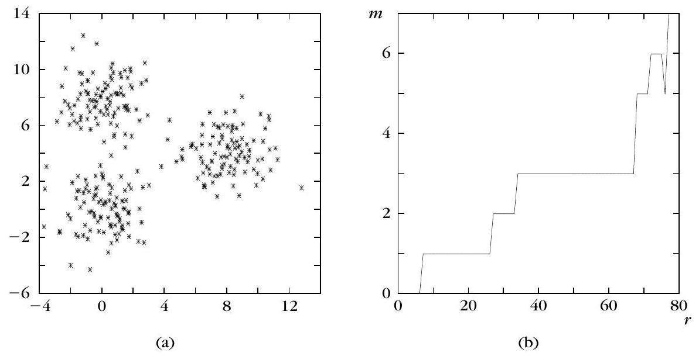
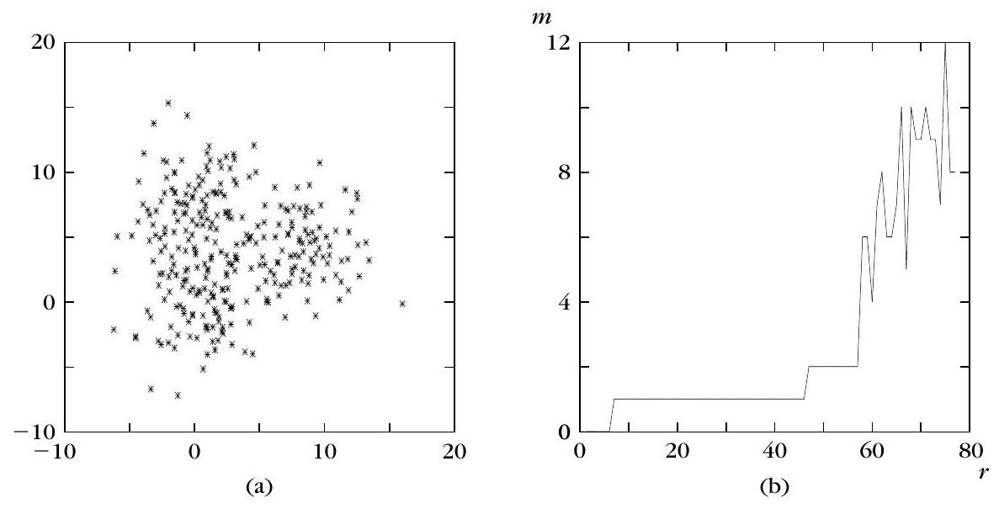
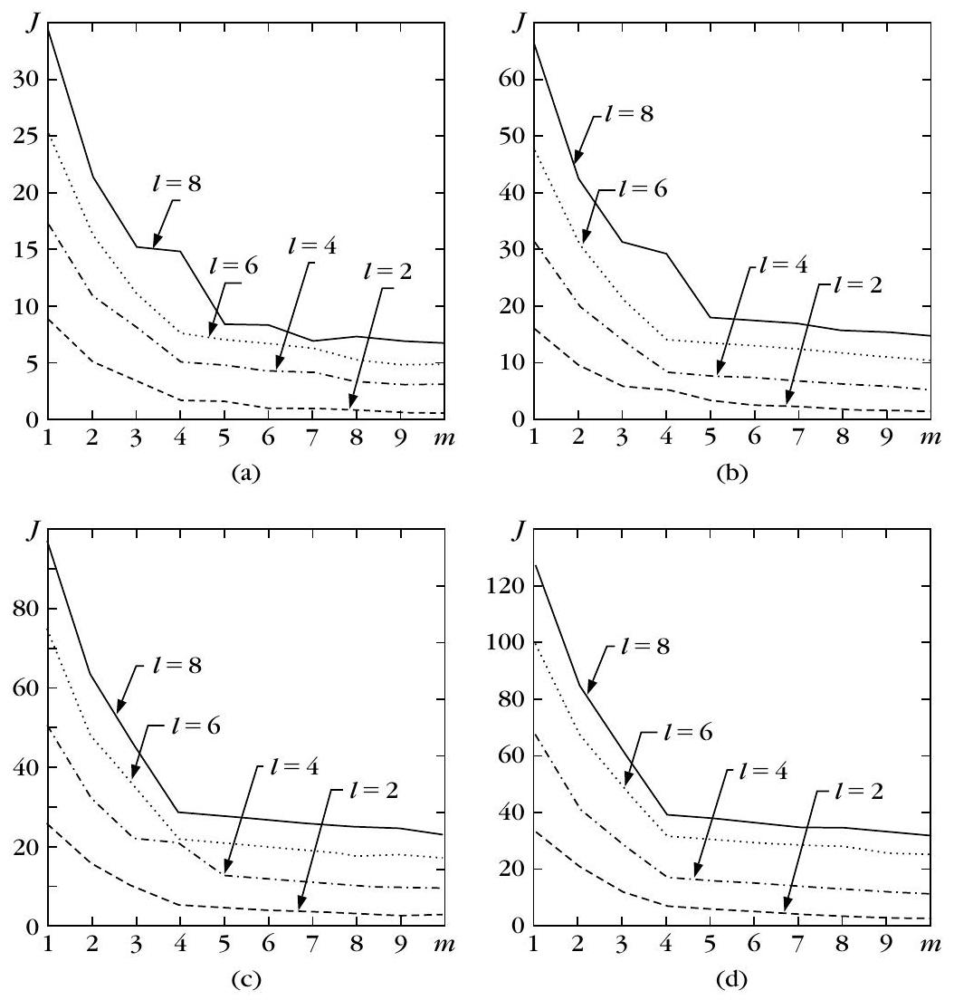
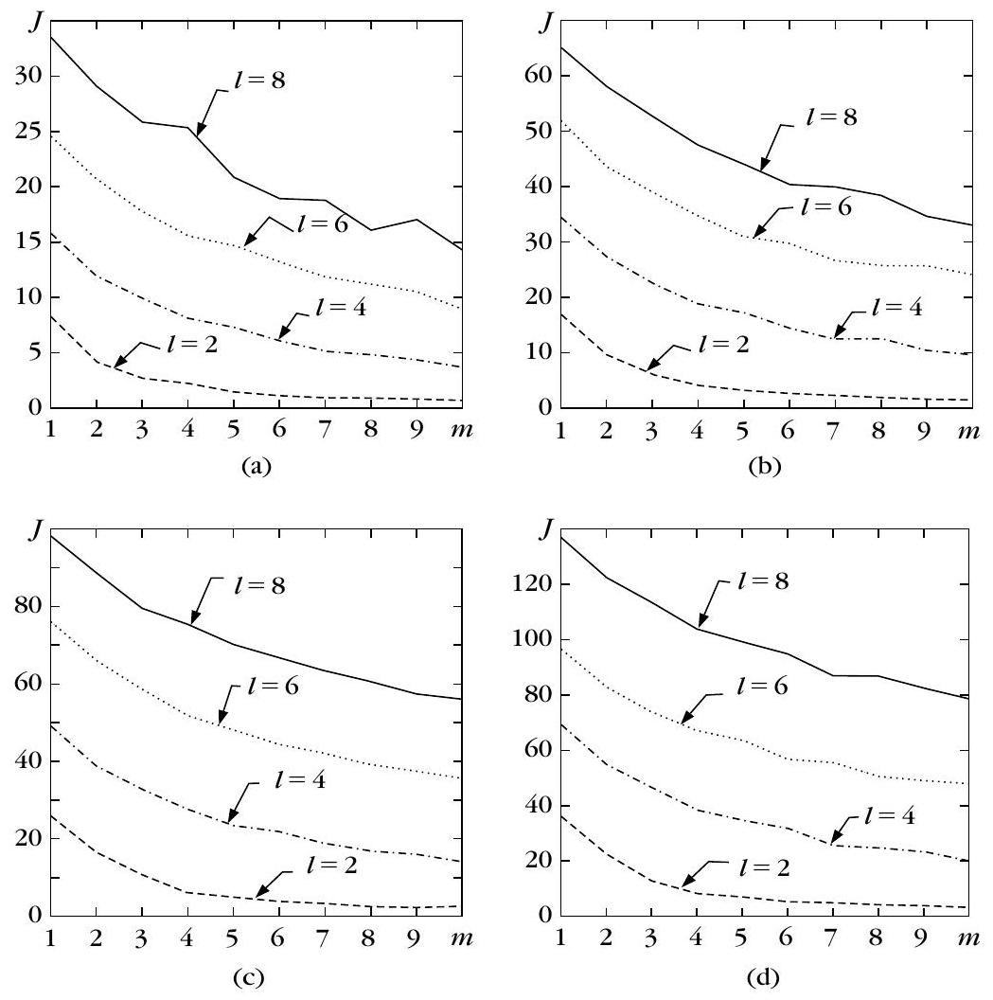
- (a) 最寬平坦：$r\in[37,67]$，$m=3$ → 取 $r=52$。
- (b) 最寬平坦：$r=7,\ldots,46$，$m=1$。
Example 16.6 用 BMCA（$3\times 3$ 結構元素）掃 $r$ 時，下列何者正確？
Example 16.7 比較有叢集結構與均勻隨機資料時，$J$ 對 $m$ 的圖（圖 16.4 vs 16.5）說明什麼？
硬分群指標：modified Hubert、Dunn／Dunn-like
▼一句話
硬分群的相對準則，核心是「緊密又分得開」：modified Hubert $\hat{\Gamma}$ 看近接矩陣 $P$ 與代表點距離矩陣 $Q$ 是否合拍；Dunn／Dunn-like 則用「群間距離／群內直徑」的比值，越大越好。
是什麼
本節先鎖定緊密叢集（compact clusters）。令 $c_i=k$ 表示向量 $\boldsymbol{x}_i$ 屬於叢集 $C_k$。定義 $N\times N$ 矩陣 $Q$，其元素 $$ Q(i,j)=d\bigl(\boldsymbol{w}_{c_i},\boldsymbol{w}_{c_j}\bigr), $$ 也就是 $\boldsymbol{x}_i$、 $\boldsymbol{x}_j$ 所屬叢集代表點之間的距離。把式 (16.8) 的 Hubert $\Gamma$ 套到資料近接矩陣 $P$ 與這個 $Q$ 上（兩邊必須用同一種距離），就是 modified Hubert $\Gamma$；同樣也可定義正規化版本 $\hat{\Gamma}$。
若 $d(\boldsymbol{w}_{c_i},\boldsymbol{w}_{c_j})$ 接近 $d(\boldsymbol{x}_i,\boldsymbol{x}_j)$——也就是 $X$ 裡真的有緊密團——則 $P$ 與 $Q$ 高度一致，$\Gamma$ 與 $\hat{\Gamma}$ 會偏高；反之則偏低。實務上畫 $\hat{\Gamma}$ 對 $m$ 的圖，找「顯著上升的膝（knee）」；$m$ 落在那個膝，就當成底層叢集數。注意：$m=1$ 與 $m=N$ 時此指標無定義。對隨機資料，$\hat{\Gamma}$ 常隨 $m\to N$ 上升；有叢集結構時曲線較平坦。
Dunn 指標先定義群間相異度與群直徑（式 16.17、16.18） $$ \begin{equation*} d(C_i,C_j)=\min_{\boldsymbol{x}\in C_i,\,\boldsymbol{y}\in C_j}d(\boldsymbol{x},\boldsymbol{y}), \tag{16.17} \end{equation*} $$ $$ \begin{equation*} \operatorname{diam}(C)=\max_{\boldsymbol{x},\boldsymbol{y}\in C}d(\boldsymbol{x},\boldsymbol{y}), \tag{16.18} \end{equation*} $$ 再組成（式 16.19） $$ \begin{equation*} D_m=\min_{i=1,\ldots,m}\Biggl\{\min_{j=i+1,\ldots,m}\Biggl(\frac{d(C_i,C_j)}{\max_{k=1,\ldots,m}\operatorname{diam}(C_k)}\Biggr)\Biggr\}. \tag{16.19} \end{equation*} $$ $X$ 若含緊密且分離良好的團，$D_m$ 會大；反過來說，大的 $D_m$ 也暗示這種結構。$D_m$ 對 $m$ 沒有單調趨勢，故在 $D_m$–$m$ 圖上取最大。原文指出：若某分群滿足 $D_m\gt 1$，則該分群含緊密且分離良好的叢集。缺點：計算量大，且對噪聲敏感——噪聲易撐大分母的 $\operatorname{diam}$。
Dunn-like（MST）：對叢集 $C_i$ 建完全圖，邊權為點距；取 MST 後，直徑 $\operatorname{diam}_i^{\mathrm{MST}}$ 定義為 MST 最大邊權。群間相異度改用均值距離 $d(C_i,C_j)=d(\boldsymbol{m}_i,\boldsymbol{m}_j)$，得到式 (16.20) $$ \begin{equation*} D_m^{\mathrm{MST}}=\min_{i=1,\ldots,m}\Biggl\{\min_{j=i+1,\ldots,m}\Biggl(\frac{d(C_i,C_j)}{\max_{k}\operatorname{diam}_k^{\mathrm{MST}}}\Biggr)\Biggr\}. \tag{16.20} \end{equation*} $$ 在 $D_m^{\mathrm{MST}}$–$m$ 圖上取最大，即估計叢集數。RNG、GG 版用類似論證。
為什麼
相對準則要在不同 $m$ 之間比結構。modified Hubert 問「資料距離」與「代表點距離」是否同步——緊密團會讓兩者合拍。Dunn 把「分離」放分子、「散度」放分母，比值大就代表又遠又緊；$D_m\gt 1$ 是原文給的充分條件式判準。MST 版把直徑從「最遠兩點」改成「MST 最大邊」，對噪聲較穩，也可用在殼狀情境的初步模擬。
怎麼用 / 怎麼記
- $Q(i,j)$：所屬代表點距離；$P$ 與 $Q$ 同一距離 → $\Gamma$/ $\hat{\Gamma}$。
- $\hat{\Gamma}$–$m$：找顯著上升膝；$m=1,N$ 無定義。
- Dunn：式 (16.17)–(16.19)；越大越好；取 $D_m$ 最大；$D_m\gt 1$ ⇒ 含緊密分離團；怕噪聲。
- Dunn-like MST：式 (16.20)；$\operatorname{diam}=$ MST 最大邊；$d(C_i,C_j)=d(\boldsymbol{m}_i,\boldsymbol{m}_j)$。
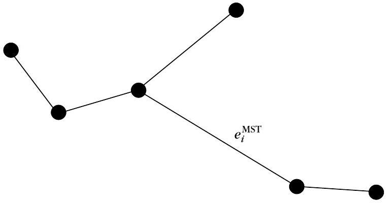
kp9-m、kp9-x2、kp9-x3、kp9-sig。
觀察什麼：團拉開 → 分子↑ → $D_m$↑；σ↑ → 直徑↑ → $D_m$↓。
正確基準：手算例 $C_1=\{(0,0),(0,1)\}$、$C_2=\{(3,0),(3,1)\}$：$d=3$、$\operatorname{diam}=1$、$D_2=3$。
modified Hubert 統計量中，矩陣 $Q$ 的元素 $Q(i,j)$ 定義為？
關於 Dunn 指標 $D_m$ 與 Dunn-like MST，下列哪一項符合原文？
硬分群：Davies–Bouldin 與資訊準則（AIC／BIC／MDL）
▼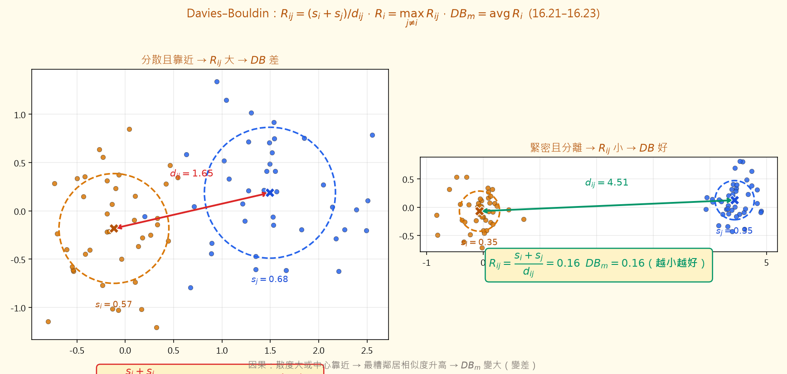
🤖 AI 生圖可用：重繪此示意圖的提示詞（結構化）
# AI 生圖提示詞 — kp-10 Davies–Bouldin ## WHAT 左右對照：左兩團分散且中心靠近，右兩團緊密且遠離。各畫代表點、散度半徑 si/sj、中心距離 dij，並標 R_ij=(si+sj)/dij 與 DB_m（m=2 時等於該 R_ij）。標明越小越好。 ## WHY 因果：散度大或距離小 → 群間相似度 R_ij 升高 → 每群最糟鄰居變糟 → DB_m 變大。反直覺：不是「距離遠就好」而已，要同時看散度；緊密分離才會讓 DB 變小。 ## MUST show - 公式 R_ij=(si+sj)/dij；DB_m 為平均最大相似。 - 分散 vs 緊密兩情境數值對照。 - 「越小越好」標示。 ## AVOID - 名詞方框流程圖。 - 暗示 DB 越大越好。 - 只畫點雲不標 si、dij。 ## STYLE 科學對照散點，amber 主題色，背景 #fffbeb，mathtext 公式。
一句話
Davies–Bouldin（DB）把「每群與其最像那一群的相似度」平均起來，求最小；資訊準則則用 $-2L+\phi(K)$ 在擬合與模型階數之間折衷，AIC／BIC／MDL 差在懲罰項 $\phi(K)$。
是什麼
令 $s_i$ 為叢集 $C_i$ 的散度（相對其均值的散布），$d_{ij}\equiv d(C_i,C_j)$ 為群間相異度。相似度 $R_{ij}$ 須滿足非負、對稱，以及「兩群都塌成一點則 $R_{ij}=0$」等條件 (C1)–(C5)。一個簡單且合條件的選擇是（式 16.21） $$ \begin{equation*} R_{ij}=\frac{s_i+s_j}{d_{ij}}, \tag{16.21} \end{equation*} $$ （要求 $d_{ij}$ 對稱。）再令（式 16.22） $$ \begin{equation*} R_i=\max_{j=1,\ldots,m,\,j\neq i} R_{ij},\quad i=1,\ldots,m, \tag{16.22} \end{equation*} $$ 則 DB 指標為（式 16.23） $$ \begin{equation*} DB_m=\frac{1}{m}\sum_{i=1}^{m} R_i. \tag{16.23} \end{equation*} $$ 也就是「每群 $C_i$ 與其最相似那一群」的平均相似度。我們希望群與群越不像越好，因此尋找使 $DB$ 最小的分群；小的 $DB$ 也表示緊密且分離良好。$DB_m$ 對 $m$ 無單調趨勢，故在 $DB_m$–$m$ 圖上取最小。
原文給的具體型：$d_{ij}=\lVert\boldsymbol{w}_i-\boldsymbol{w}_j\rVert_q$（式 16.24），$s_i=\bigl(\frac{1}{n_i}\sum_{\boldsymbol{x}\in C_i}\lVert\boldsymbol{x}-\boldsymbol{w}_i\rVert^r\bigr)^{1/r}$（式 16.25）。另有 MST／RNG／GG 的 DB-like 變體（式 16.26、16.27），同樣在曲線上取最小。
資訊理論準則改走「哪個模型最貼資料」路線。定義（式 16.33） $$ \begin{equation*} C(\boldsymbol{\theta},K)=-2L(\boldsymbol{\theta})+\phi(K), \tag{16.33} \end{equation*} $$ 其中 $L$ 為對數概似，$K=\dim(\boldsymbol{\theta})$ 為模型階數，$\phi$ 隨 $K$ 遞增。典型選擇：
- $\phi(K)=2K$：AIC；
- $\phi(K)=\dfrac{2KN}{N-K-1}$：Consistent AIC；
- $\phi(K)=K\ln N$：MDL 與 BIC。
為什麼
DB 把「散度加總／距離」當成群間相像程度，$R_i$ 再抓最糟（最像）的鄰居，平均後越小表示整體分得越乾淨。資訊準則則承認：多加一群一定更能抬高概似，所以用 $\phi(K)$ 懲罰複雜度；AIC 懲罰較輕，Consistent AIC 與 BIC／MDL 在大 $N$ 時更狠，較不易過度分割。
怎麼用 / 怎麼記
- 口訣：$R_{ij}=(s_i+s_j)/d_{ij}$ → $R_i=\max_{j\neq i}R_{ij}$ → $DB_m=\mathrm{avg}\,R_i$ → 求最小。
- 式 (16.33)：$C=-2L+\phi(K)$；先對 $\boldsymbol{\theta}$ 最大化 $L$，再比不同 $K$（或 $m$）。
- $\phi$：$2K$（AIC）；$2KN/(N-K-1)$（Consistent AIC）；$K\ln N$（MDL／BIC）。
- 高斯混合：$K=(l+l(l+1)/2+1)m-1$。
kp10-sep、kp10-sig，或按「分開／重疊」預設。
觀察什麼：分開 → $d_{ij}$ 大、$s_i$ 小 → $R_{ij}$、$DB$ 小；重疊則相反。
正確基準：$R_{12}=(s_1+s_2)/d_{12}$；$m=2$ 時 $R_1=R_2=R_{12}$，故 $DB_2=R_{12}$。
Davies–Bouldin 指標的定義與選 $m$ 的方式，下列何者正確？
資訊準則 $C(\boldsymbol{\theta},K)=-2L+\phi(K)$ 中，BIC／MDL 的 $\phi(K)$ 與高斯混合的階數 $K$ 分別是？
模糊指標：PC／PE（Example 16.8）
▼一句話
模糊分群要找「不要太糊」的結構：多數點在某一群的隸屬度很高。只看隸屬矩陣 $U$ 的兩個經典指標是分割係數 PC 與分割熵 PE；Example 16.8 顯示它們對模糊指數 $q$ 很敏感。
是什麼
模糊分群由 $N\times m$ 矩陣 $U=[u_{ij}]$ 描述，$u_{ij}$ 是 $\boldsymbol{x}_i$ 屬於第 $j$ 群的隸屬度。策略與硬分群相同：定義指標後，在對 $m$ 的圖上找最小／最大，或找顯著膝。
分割係數（partition coefficient）（式 16.34） $$ \begin{equation*} PC=\frac{1}{N}\sum_{i=1}^{N}\sum_{j=1}^{m} u_{ij}^{2}. \tag{16.34} \end{equation*} $$ 值域為 $[1/m,\,1]$（對 $m\gt 1$ 計算；$m=1$ 時平凡地等於 1）。$PC$ 越接近 1，分群越「硬」、點在各群之間的分享越少；所有 $u_{ij}=1/m$ 時得到下限 $1/m$，越接近 $1/m$ 表示越模糊——可能 $X$ 根本沒有叢集結構，或演算法沒抓出來。
分割熵（partition entropy）（式 16.35） $$ \begin{equation*} PE=-\frac{1}{N}\sum_{i=1}^{N}\sum_{j=1}^{m}\bigl(u_{ij}\log_{a} u_{ij}\bigr), \tag{16.35} \end{equation*} $$ 其中 $a$ 為對數底。同樣對 $m\gt 1$ 計算；最小值 $0$、最大值 $\log_{a} m$。$PE\to 0$ 表示較硬；$PE\to\log_{a} m$ 表示較糊。PC、PE 都只量「重疊程度」，不用到資料位置與代表點。
兩者的缺點：對 $m$ 有單調趨勢（PC 傾向隨 $m$ 降、PE 傾向升），因此要找顯著膝；且對模糊指數 $q$ 敏感。可證：$q\to 1^{+}$ 時兩者對所有 $m$ 給相同值、無法分辨；$q\to\infty$ 時最顯著的膝落在 $m=2$。
Example 16.8：$X$ 含三組二維向量，各 100 點，來自均值 $[1,1]^{T}$、$[4,4]^{T}$、$[7,1]^{T}$ 的常態，共變皆為 $2\times 2$ 單位矩陣。對 fuzzy $c$-means 跑 $q=1.5,2,3,5$ 與 $m=1,\ldots,10$。
- $q=1.5$ 與 $q=2$：PC、PE 曲線都在 $m=3$（正確自然叢集數）出現顯著膝。
- $q=3$ 與 $q=5$：曲線重合，意味 $q\ge 3$ 後行為不再明顯變化；PC 無峰、PE 無谷，無法臆測 $m$。
- 整體：PC 隨 $m$ 有下降趨勢，PE 有上升趨勢。
為什麼
$u_{ij}^{2}$ 在隸屬度接近 0/1 時較大、在平均分配時較小，所以 PC 直接量化「硬不硬」。PE 則是隸屬度分布的熵：越平均越亂、熵越大。Example 16.8 提醒：同一套資料，$q$ 太大時 PC／PE 會「瞎」——曲線貼在一起、膝消失，不能怪資料沒有三團。
怎麼用 / 怎麼記
- PC：式 (16.34)；範圍 $[1/m,1]$；越大越硬；找上升膝。
- PE：式 (16.35)；範圍 $[0,\log_{a} m]$；越小越硬；找下降膝。
- Ex 16.8：三團×100；均值 $[1,1],[4,4],[7,1]$；$\Sigma=I$；$q=1.5,2$ 在 $m=3$ 有膝；$q=3,5$ 重合且無可猜的峰／谷。
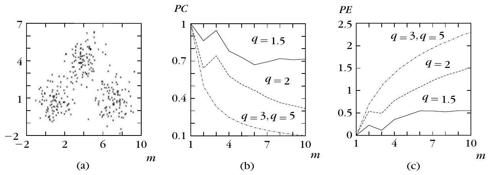
kp11-m、kp11-q；下圖畫出當前 $q$ 下 PC／PE 對 $m=2..6$。
觀察什麼：$q\approx 1.5$–$2$ 時 PC／PE 在 $m=3$ 附近較有「膝」的精神；$q$ 大時曲線變平。
正確基準：硬分割 PC→1；均勻隸屬 PC→$1/m$。PC 隨 $m$ 傾向下降、PE 上升。
分割係數 $PC$ 的定義與值域，下列何者正確？
Example 16.8 中，關於 $q$ 與 PC／PE 曲線，何者符合原文？
模糊：XB／FS 與殼狀指標
▼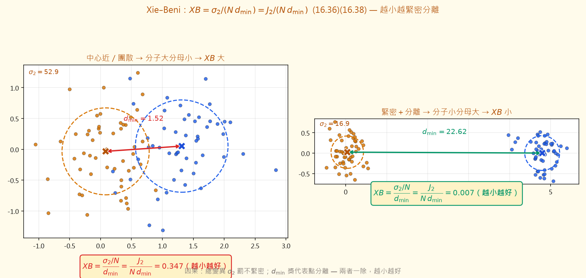
🤖 AI 生圖可用：重繪此示意圖的提示詞（結構化）
# AI 生圖提示詞 — kp-12 Xie–Beni ## WHAT 左右對照兩團分群：左中心近／較散（XB 大），右緊密分離（XB 小）。標示總變異 σ2、最小代表間距平方 d_min，以及公式 XB=σ2/(N d_min)=J2/(N d_min)，標 (16.36)(16.38)。 ## WHY 因果：分子罰不緊密、分母獎分離；兩者相除越小越好。反直覺：只看隸屬度「很硬」不夠——幾何上若中心太近或團太散，XB 仍會變差。 ## MUST show - 式 (16.36)(16.38)。 - σ2／d_min 視覺（散度圈＋中心距）。 - 左右 XB 數值對照與「越小越好」。 ## AVOID - 名詞連連看。 - 漏掉 J2 等價式。 - 暗示 XB 越大越好。 ## STYLE 科學對照散點，amber #d97706/#b45309，背景 #fffbeb，mathtext。
一句話
PC／PE 只用 $U$；Xie–Beni（XB）與 Fukuyama–Sugeno（FS）把資料位置與代表點也算進去。殼狀叢集則把「點到代表」改成到殼的殘差 $\tau_{ij}$，超體積／密度公式跟著換皮。
是什麼
定義叢集變異 $\sigma_j^{q}=\sum_{i=1}^{N}u_{ij}^{q}\lVert\boldsymbol{x}_i-\boldsymbol{w}_j\rVert^{2}$、總變異 $\sigma_q=\sum_{j=1}^{m}\sigma_j^{q}$，以及分離度 $d_{\min}=\min_{i\neq j}\lVert\boldsymbol{w}_i-\boldsymbol{w}_j\rVert^{2}$。Xie–Beni 指標（緊密–分離效度函數）為（式 16.36） $$ \begin{equation*} XB=\frac{\sigma_{2}/N}{d_{\min}}. \tag{16.36} \end{equation*} $$ 常搭配歐氏距離的 fuzzy $c$-means；注意：演算法的模糊指數 $q$ 可 $\gt 1$，但 XB 裡 $\sigma_q$ 的 $q$ 固定為 2。緊密且分離良好 ⇒ $XB$ 小；反之亦然。$m$ 很接近 $N$ 時 $XB$ 會單調下降，實務上先找單調起點 $m_{\max}$，再在 $[2,m_{\max}]$ 內求最小。
令（式 16.37）$J_q=\sum_i\sum_j u_{ij}^{q}\lVert\boldsymbol{x}_i-\boldsymbol{w}_j\rVert^{2}$（即 FCM 在平方歐氏距離下的成本），則（式 16.38） $$ \begin{equation*} XB=\frac{J_{2}}{N\,d_{\min}}. \tag{16.38} \end{equation*} $$ 拿掉 $q=2$ 限制得廣義版（式 16.39）$XB_q=\sigma_q/(N d_{\min})$。極限：$q\to\infty$ 時 $XB\to\infty$，而 $XB_q$ 變成不確定。
Fukuyama–Sugeno（式 16.40） $$ \begin{equation*} FS_q=\sum_{i=1}^{N}\sum_{j=1}^{m} u_{ij}^{q}\Bigl(\lVert\boldsymbol{x}_i-\boldsymbol{w}_j\rVert_{A}^{2}-\lVert\boldsymbol{w}_j-\boldsymbol{w}\rVert_{A}^{2}\Bigr), \tag{16.40} \end{equation*} $$ 其中 $\boldsymbol{w}$ 為 $X$ 的均值，$A$ 為正定對稱；$A=I$ 即平方歐氏。括號第一項量緊密、第二項量代表點相對總均值的分離；緊密分離 ⇒ $FS_q$ 小。極限：$q\to 1^{+}$ 時行為像 $\operatorname{tr}(S_w)$；$q\to\infty$ 時 $FS_q\to 0$。
另有超體積／密度族：模糊共變 $\Sigma_j$（式 16.41）、$V_j=|\Sigma_j|^{1/2}$（式 16.42）、總模糊超體積 $FH=\sum_j V_j$（式 16.43）；平均分割密度 $PA$（式 16.44）與分割密度 $PD=S/FH$（式 16.45）。$FH$ 小、$PA$／$PD$ 大 ⇒ 較緊密。除 PC／PE 外，這些指標也可經式 (16.46) 的硬指派用於硬分群。
殼狀叢集：代表為殼 $\beta_j$，參數 $\boldsymbol{\theta}_j$。點到殼的殘差（式 16.47）$\tau_{ij}=\boldsymbol{x}_i-\boldsymbol{x}_j^{i}$（$\boldsymbol{x}_j^{i}$ 為殼上距 $\boldsymbol{x}_i$ 最近點）。球面殼 $\boldsymbol{\theta}_j=(\boldsymbol{c}_j,r_j)$ 時有封閉式（式 16.48）。模糊殼共變 $\Sigma_j^{S}$（式 16.49）、殼超體積 $V_j^{S}=|\Sigma_j^{S}|^{1/2}$（式 16.50）；再定義 $X_j^{S}$、$S_j^{S}$ 後，殼密度、平均分割殼密度、殼分割密度比照點代表情形。另有總模糊平均殼厚度（式 16.51、16.52） $$ T^{S}=\sum_{j=1}^{m} T_j^{S},\qquad T_j^{S}=\frac{\sum_{i=1}^{N} u_{ij}^{q}\lVert\tau_{ij}\rVert^{2}}{\sum_{i=1}^{N} u_{ij}^{q}}. $$ 「越厚」$T^{S}$ 越小；但 $T^{S}$ 常隨叢集數增加而單調下降。這類指標普遍對叢集大小與點密度敏感。
備註：也可用 progressive clustering——先用偏大的 $m$ 跑分群，去掉虛假團、合併相容團、留下「好」團，再對剩餘資料以較小 $m$ 重跑；優點是不必掃完整段 $m$ 區間、較不受噪聲影響，但需另訂合併／剔除／辨識準則。
為什麼
只有 $U$ 時，幾何上「團很開但隸屬度碰巧很硬」會被 PC／PE 誤讚。XB 用 $\sigma_2$ 罰不緊密、用 $d_{\min}$ 獎分離；FS 把「群內緊」與「代表點離總心遠」寫在同一條加減式。殼狀資料的代表不是點，硬套 $\lVert\boldsymbol{x}-\boldsymbol{w}\rVert$ 會錯——改成 $\tau_{ij}$ 後，超體積與密度才量到「貼殼有多緊」。
怎麼用 / 怎麼記
- XB：式 (16.36)＝(16.38)；$\sigma$ 用 $q=2$；求小；近 $N$ 時防單調下降。
- $XB_q$：式 (16.39)，放開 $q$。
- $FS_q$：式 (16.40)；小＝好。
- 殼：$\tau_{ij}$（16.47／16.48）→ $\Sigma_j^{S}$（16.49）→ $V_j^{S}$（16.50）→ 密度與 $T^{S}$（16.51／16.52）。
- progressive clustering：過大 $m$ → 清虛假／合併／留好團 → 對剩餘資料重跑。
Xie–Beni 指標 $XB$ 與 $XB_q$ 的關係，下列何者正確？
關於 Fukuyama–Sugeno 與殼狀指標，下列哪一項符合原文？
個別叢集效度：外部圖指標與內部密度
▼一句話
有時我們不問「整份分群好不好」，只問「這一個子集 $C$ 算不算好叢集」——好，指的是對自己夠緊密（compact）、對其餘點夠隔離（isolation）。外部準則靠接近圖上的邊數；內部準則則看生命期、超體積／密度，或殼狀的表面密度 $\delta$。
是什麼
§16.5 指出兩種情境會關心「單一叢集」：一是事先給定 $X$ 的一個子集，想測它是否形成好叢集；二是驗證某個分群演算法吐出來的某一群。兩者都可用外部或內部準則。
外部準則（硬叢集、序數型接近矩陣）：先建接近圖 $G(p)$——$N$ 個頂點對應 $X$ 的向量，邊對應接近矩陣 $P$ 上三角中最小的 $p$ 個相異度（其中 $p$ 小於 $N(N-1)/2$）。給定子集 $C\subset X$（基數為 $k$），依邊的兩端落點定義三個集合：
- $A_{\mathrm{in}}(p)$：兩端都在 $C$ 內的邊；
- $A_{\mathrm{out}}(p)$：兩端都在 $X-C$ 的邊；
- $A_{\mathrm{bet}}(p)$：一端在 $C$、一端在 $X-C$ 的邊。
令 $q_C(p)$ 為連接 $C$ 與 $X-C$ 的邊數，$r_C(p)$ 為連接 $C$ 內部頂點的邊（數目隨 $p$ 變）。判定方向很直觀：
- $q_C(p)$ 低 → $C$ 隔離得好；
- $r_C(p)$ 高 → $C$ 緊密。
實務上把 $q_C(p)$、$r_C(p)$ 對 $p$ 作圖：隔離又緊密的叢集，會在一段「夠寬」的 $p$ 區間同時維持低 $q_C$、高 $r_C$（區間多寬依應用而定）。缺點是它們沒有對「隨機母體」給出機率意義；[Bail 82] 另有機率框架的延伸。
內部準則只靠 $X$ 的接近矩陣 $P$：
- 硬分群／序數接近：適合階層分群。叢集 $C$ 的生命期 $L(C)=d_a(C)-d_f(C)$，其中 $d_f(C)$ 是 $C$ 形成的階層層級、$d_a(C)$ 是 $C$ 被吸進更大叢集的層級。Ling index 就是「隨機選一個叢集，其生命期超過 $L(C)$」的機率。同屬此類的還有 best case 法、CM reachable 法。
- 比率尺度接近：緊密團可用硬超體積／硬密度；殼狀則用硬殼超體積／硬殼密度。再拿經驗門檻 $\varepsilon$ 判定「好／不好」。
- 模糊／殼狀：好叢集意指繞著殼代表夠緊。可用殼超體積、殼密度、模糊平均殼厚度，同樣與門檻 $\varepsilon$ 比較。這些指標沒有考慮「殼落在子空間」；表面密度（surface density）補上這一點。
二維表面密度：令 $X'$ 為 $C$ 中距殼代表 $\beta$ 不超過 $\tau_{\max}$ 的點，$S=\sum_{j:\boldsymbol{x}_j\in X'} u_j$，則（式 16.53–16.54） $$ \begin{equation*} \delta=\frac{S}{2\pi r_{\mathrm{eff}}},\qquad r_{\mathrm{eff}}=\sqrt{\mathrm{tr}\{\Sigma\}}. \tag{16.53–16.54} \end{equation*} $$ $2\pi r_{\mathrm{eff}}$ 可視為 $C$ 弧長的估計；$\delta$ 愈大，叢集愈密。Figure 16.8 兩個等半徑圓形殼，右側比左側更密繞代表，故右側 $\delta$ 更大。緊密（非殼）模糊叢集則可改用模糊超體積或模糊密度。
為什麼
整份分群的效度指標可能被「某一群特別差、其餘都好」平均掉；個別叢集效度直接對單一 $C$ 問緊密與隔離。圖指標把「誰跟誰連得上」變成可對 $p$ 掃描的曲線；殼狀的 $\delta$ 則把隸屬質量除以有效弧長，避免只看體積而忽略「點是沿著殼排的」。
怎麼用 / 怎麼記
- 口訣：$q_C$ 低＝隔離、$r_C$ 高＝緊密；對 $p$ 掃一條夠寬的區間。
- 生命期：$L(C)=d_a-d_f$；Ling index $=$ 隨機叢集生命期超過 $L(C)$ 的機率。
- 式 (16.53)(16.54)：$\delta=S/(2\pi r_{\mathrm{eff}})$，$r_{\mathrm{eff}}=\sqrt{\mathrm{tr}\{\Sigma\}}$；Fig 16.8 右團 $\delta$ 較大。
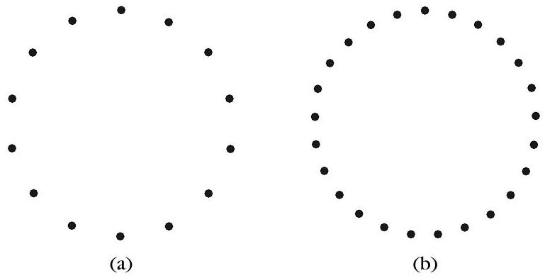
對接近圖 $G(p)$ 與子集 $C$，下列哪一項符合原文對 $q_C(p)$、$r_C(p)$ 的判定？
模糊殼狀叢集的表面密度 $\delta$（式 16.53–16.54）與 Figure 16.8，下列何者正確？
分群傾向：隨機／規則／叢集與取樣窗
▼一句話
幾乎所有分群演算法都會「硬加」一套叢集結構——就算 $X$ 根本沒有團。分群傾向（clustering tendency）就是先檢：$X$ 到底有沒有值得分的結構？先驗假設有三種：隨機、規則間距、叢集；虛無 $H_0$ 是「在取樣窗內均勻」。
是什麼
若接受隨機或規則假設，就不該硬跑分群，改用別的資料詮釋方式。三種假設（針對緊密叢集、一般 $l\ge 2$）精確定義為：
- 隨機（$H_0$）：$X$ 的向量在取樣窗（sampling window）內依均勻分布隨機散布；
- 規則（regularity）：向量在窗內規則排列，彼此不會靠太近；
- 叢集：向量形成叢集。
兩個關鍵會大幅影響檢定表現：維度 $l$（影響非顯而易見，常靠模擬看），以及取樣窗。實務上窗往往未知。Figure 16.9：虛線圓內的點其實是均勻的，換用點劃線圍出的「錯窗」當取樣窗後，同樣的點看起來就不像隨機，$H_0$ 檢定可能失敗。再加上窗有限，邊界附近的距離統計會跟中心不同——這叫邊界效應。緩解方式包括：取樣窗的週期延拓，或改看窗內較小的 sampling frame，估計時仍可借用 frame 外、窗內的點來壓邊界效應。
Example 16.9：$N=100$ 個向量均勻分布在超立方 $H_2$ 內（Fig 16.10a）。中心附近點 $\boldsymbol{x}=[0.5045,0.4764]^{T}$ 到其餘點的距離分布（Fig 16.10b），與靠近邊界的 $\boldsymbol{y}=[0.0159,0.8089]^{T}$ 的距離分布（Fig 16.10c）明顯不同——同一個均勻資料，位置一換，距離長相就不一樣。
估計取樣窗可用 $X$ 的凸包（convex hull），但檢定分布會綁死在手上這份資料，且凸包計算貴。實務常用替代：以 $X$ 均值為心、剛好包住一半向量的超球當取樣窗（另一半丟掉在此階段可接受——這裡只想測有沒有叢集結構；若有，再對全部資料跑分群）。
為了用 Monte Carlo 估統計量在規則／叢集假設下的 pdf，需要能生成對照資料：
- 叢集資料：Neyman–Scott 程序——在已知窗內隨機放中心，每團點數跟 Poisson（強度 $\lambda$），點繞中心以 $N(\boldsymbol{y}_i,\sigma^2 I)$ 生成，超出窗則重抽，直到共 $N$ 點（Fig 16.11a,b）。
- 規則資料：可在凸包上放格子；或用 SSI（simple sequential inhibition）：逐點放入，各點定義半徑 $r$ 的超球，新點的超球不得與既有超球相交，直到達預定點數或再也塞不進（Fig 16.11c）。填充程度可用 packing density（式 16.55） $$ \begin{equation*} \rho=\frac{L}{V}V_r,\quad V_r=A r^{l},\quad A=\frac{\pi^{l/2}}{\Gamma(l/2+1)}. \tag{16.55–16.57} \end{equation*} $$
- 隨機資料：在取樣窗內依均勻分布插入向量即可。
為什麼
分群演算法的「惱人特性」是：沒有結構也會吐出結構。先做傾向檢定，等於在問「資料值不值得被分」。取樣窗選錯，連真正的均勻都會被判成非隨機——Example 16.9 用中心點與邊界點的距離分布把邊界效應講死。
怎麼用 / 怎麼記
- 三種假設：隨機 $H_0$（窗內均勻）／規則（別太近）／叢集。
- 窗：錯窗→Fig 16.9；邊界效應→Example 16.9 的 $[0.5045,0.4764]^{T}$ vs $[0.0159,0.8089]^{T}$。
- 估窗：凸包（貴、依賴資料）或「均值為心、含一半點」的超球。
- 生成：Poisson／Neyman–Scott 叢集；SSI 規則（Fig 16.11）；均勻＝隨機。
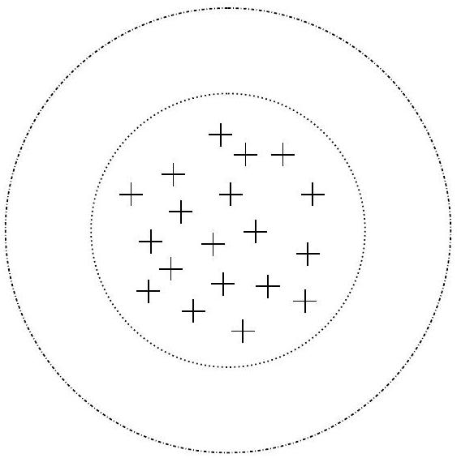
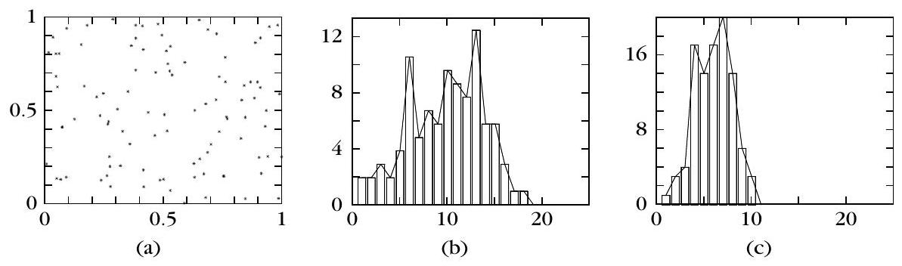
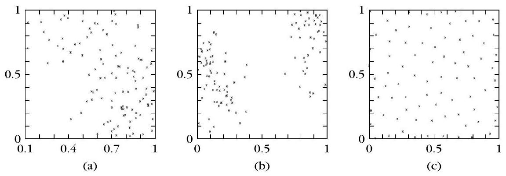
分群傾向框架下，虛無假設 $H_0$（隨機）的原文定義是？
關於 Example 16.9 與取樣窗／生成程序，下列哪一項正確？
空間隨機性：結構圖／最近鄰／Cox–Lewis
▼一句話
§16.6.1 在「已知取樣窗、$l\ge 2$」下給三類空間隨機性檢定：結構圖（MST 邊數 $q$）、Hopkins 最近鄰比 $b$、Cox–Lewis 統計 $R$。記住每種統計量「大／小／約一半」各對應叢集、規則還是隨機。
是什麼
文獻上還有 scan test、quadrat、二階矩、點間距離等（多用於 $l=2$）。下面三法較適一般維度，且都要知道取樣窗。
1. 結構圖檢定（MST）：先找 $X$ 所在凸區域，再在該區域（或其近似）均勻生成 $M$ 個點構成 $X'$（通常 $M=N$）。對 $X\cup X'$ 建 MST，令 $q$ 為「一端在 $X$、一端在 $X'$」的邊數。$X$ 有叢集時，預期 $q$ 小；反過來說，小 $q$ 暗示有叢集，大 $q$ 暗示規則排列。令 $e$ 為共用頂點的 MST 邊對數，$L=M+N$。在 $H_0$ 下（式 16.58–16.60） $$ \begin{equation*} E(q\mid H_0)=\frac{2MN}{M+N}, \tag{16.58} \end{equation*} $$ $$ \begin{align*} \mathrm{var}(q\mid e,H_0) &=\frac{2MN}{L(L-1)}\Biggl[\frac{2MN-L}{L} +\frac{e-L+2}{(L-2)(L-3)}\bigl(L(L-1)-4MN+2\bigr)\Biggr], \tag{16.59} \end{align*} $$ $$ \begin{equation*} q'=\frac{q-E(q\mid H_0)}{\sqrt{\mathrm{var}(q\mid e,H_0)}}. \tag{16.60} \end{equation*} $$ 當 $M,N\to\infty$ 且 $M/N$ 不太靠近 0 或 $\infty$ 時，$q'$ 近似標準常態。顯著水準 $\rho$ 下，若 $q'$ 小於標準常態的 $\rho$ 分位數就拒絕 $H_0$。此檢定對叢集傾向檢定力高，對規則性檢定力弱。
2. Hopkins 檢定（最近鄰）：在窗內均勻放 $M$ 個點 $X'=\{\boldsymbol{y}_i\}$（$M\ll N$），再從 $X$ 隨機抽 $M$ 點得 $X_1$。令 $d_j$ 為 $\boldsymbol{y}_j$ 到 $X_1$ 最近點 $\boldsymbol{x}_j$ 的距離，$\delta_j$ 為 $\boldsymbol{x}_j$ 到 $X_1\setminus\{\boldsymbol{x}_j\}$ 最近點的距離。統計量（式 16.61） $$ \begin{equation*} b=\frac{\sum_{j=1}^{M} d_j^{l}}{\sum_{j=1}^{M} d_j^{l}+\sum_{j=1}^{M} \delta_j^{l}}. \tag{16.61} \end{equation*} $$ 解讀：$X$ 有叢集時 $X_1$ 內最近鄰偏短 → $b$ 偏大（大 $b$ 暗示叢集）；規則時 $\sum d_j^{l}$ 往往小於 $\sum \delta_j^{l}$ → $b$ 偏小；約 $1/2$ 暗示隨機。在 Poisson／隨機且最近鄰獨立時，$b\mid H_0$ 服從 Beta$(M,M)$。模擬顯示：對超立方窗與週期邊界、$l=2,\ldots,5$，對規則性檢定力高，對叢集傾向則有限。
3. Cox–Lewis 檢定：同樣在窗內放 $X'$，但不需另抽 $X_1$。對每個 $\boldsymbol{y}_j$ 找 $X$ 中最近的 $\boldsymbol{x}_j$，再找 $X\setminus\{\boldsymbol{x}_j\}$ 中最近的 $\boldsymbol{x}_i$；令 $d_j=\lVert\boldsymbol{y}_j-\boldsymbol{x}_j\rVert$、$\delta_j=\lVert\boldsymbol{x}_j-\boldsymbol{x}_i\rVert$。只保留 $2d_j/\delta_j\ge 1$ 的那些 $\boldsymbol{y}_j$（共 $M'$ 個），對其定義適當函數 $R_j$，再（式 16.62） $$ \begin{equation*} R=\frac{1}{M'}\sum_{j=1}^{M'} R_j. \tag{16.62} \end{equation*} $$ $H_0$ 下 $R$ 近似常態，均值 $1/2$、變異數 $12M'$。小 $R$ → 叢集；大 $R$ → 規則；靠近均值 → 隨機。模擬：對叢集對立，表現不如 Hopkins；對規則假設則未必較差。另有 $T$-squared sampling 兩檢定，模擬顯示整體不如 Hopkins 與 Cox–Lewis。
為什麼
三種檢定都在問「資料的空間排列像不像窗內的均勻？」MST 法把真實點與人造均勻點混在同一棵樹上，看跨集合邊多不多；Hopkins 直接比「人造點到資料」與「資料內部」的最近鄰；Cox–Lewis 則用 $2d/\delta$ 篩過後的平均 $R$。記住檢定力不對稱：MST 擅打叢集、Hopkins 擅打規則，選工具要對症。
怎麼用 / 怎麼記
- MST：小 $q$／小 $q'$ → 叢集；大 $q$ → 規則；$E(q\mid H_0)=2MN/(M+N)$。
- Hopkins $b$：大→叢集、小→規則、$\approx 1/2$→隨機；對規則強、對叢集弱。
- Cox–Lewis $R$：小→叢集、大→規則、近 $1/2$→隨機；對叢集不如 Hopkins。
MST 結構圖檢定中，統計量 $q$ 與 $q'$ 的原文判定與公式，下列何者正確？
Hopkins 統計 $b$（式 16.61）與 Cox–Lewis 的 $R$（式 16.62），解讀方向何者正確？
稀疏分解技術（Example 16.10）
▼一句話
稀疏分解（sparse decomposition）把 $X$ 一層層「剝」掉：每層 $L_i$ 依最長 MST 邊與距離門檻 $b$ 標記並移除點。叢集資料剝得慢、規則資料剝得快、隨機介於中間——Example 16.10 用 15／10／7 層與 Fig 16.12–16.14 把速率差畫出來。
是什麼
依 [Hoff 87]，從 $X$ 出發反覆移除向量直到空集合。先定義：序列分解 $D$ 是把 $X$ 剖成有順序的分解層（decomposition layers）$L_1,\ldots,L_k$。令 $\mathrm{MST}(X)$ 為 $X$ 的最小生成樹。集合 $S(X)$ 的建構：從 $S(X)=\emptyset$ 開始，把最長邊 $e$ 的一個端點 $\boldsymbol{x}$ 移入 $S(X)$，並標記所有與 $\boldsymbol{x}$ 距離 $\le b$ 的點（$b$ 為 $e$ 的長度）；再找未標記點中離 $S(X)$ 最近的 $\boldsymbol{y}$ 移入並同樣以半徑 $b$ 標記；重複直到全部標記完畢。令 $R(X)=X-S(X)$，並設 $R^{0}(X)=X$，則（式 16.63） $$ \begin{equation*} L_i=S\bigl(R^{i-1}(X)\bigr),\quad i=1,\ldots,k, \tag{16.63} \end{equation*} $$ 其中 $k$ 是使 $R^{k}(X)=\emptyset$ 的最小整數。直觀上就是反覆剝皮，直到點被拿光。
跑完可得到：(a) 層數 $k$；(b) 各層 $L_i$；(c) 各層基數 $l_i$；(d) 各層用到的最長 MST 邊序列。叢集、隨機、規則三種資料的分解結果不同，因而可據此定義檢定統計量。預期：$k$ 對叢集資料較大、對隨機較小、對規則更小（規則剝得最快）。
Example 16.10（皆為單位正方形內 60 個二維點）：
- (a) 叢集 $X_1$：四團各 15 點，均值分別 $[0.2,0.2]^{T}$、$[0.2,0.8]^{T}$、$[0.8,0.2]^{T}$、$[0.8,0.8]^{T}$，共變皆 $0.15 I$。稀疏分解得 15 層。Fig 16.12 顯示前四層。
- (b) 隨機 $X_2$：60 點均勻於單位正方形 → 10 層。Fig 16.13 為前四層。
- (c) 規則 $X_3$：SSI 產生的 60 點 → 7 層。Fig 16.14 為前四層。
原文結語：點的移除速率對叢集資料慢得多，對規則資料快得多（隨機居中）。
其中表現不錯的統計量是 $P$ 統計（式 16.64） $$ \begin{equation*} P=\prod_{i=1}^{k}\frac{l_i}{n_i-l_i}, \tag{16.64} \end{equation*} $$ $n_i$ 為 $R^{i-1}(X)$ 的點數——每一因子是「該階段移除數／剩餘數」。初步模擬顯示 $P$ 對叢集對立檢定力高；$H_0$、$H_1$、$H_2$ 下的 pdf 因理論難推，改用 Monte Carlo 估計。
為什麼
MST 最長邊抓住「目前資料裡最疏的跨距」；以該長度當標記半徑，等於一次清掉「跟這個端點一樣疏密尺度」的一圈點。團狀資料內部很密、團與團之間很疏，剝皮要很多輪才清空；規則資料處處間距相仿，一輪就能標掉很多點，層數自然少。Example 16.10 的 15／10／7 就是這句話的數字版。
怎麼用 / 怎麼記
- 口訣：叢集剝得慢、規則剝得快、隨機居中。
- Ex 16.10：各 60 點 → 叢集 15 層、隨機 10 層、SSI 規則 7 層；Fig 16.12／16.13／16.14＝前四層。
- 式 (16.63)：$L_i=S(R^{i-1}(X))$；式 (16.64)：$P=\prod l_i/(n_i-l_i)$。
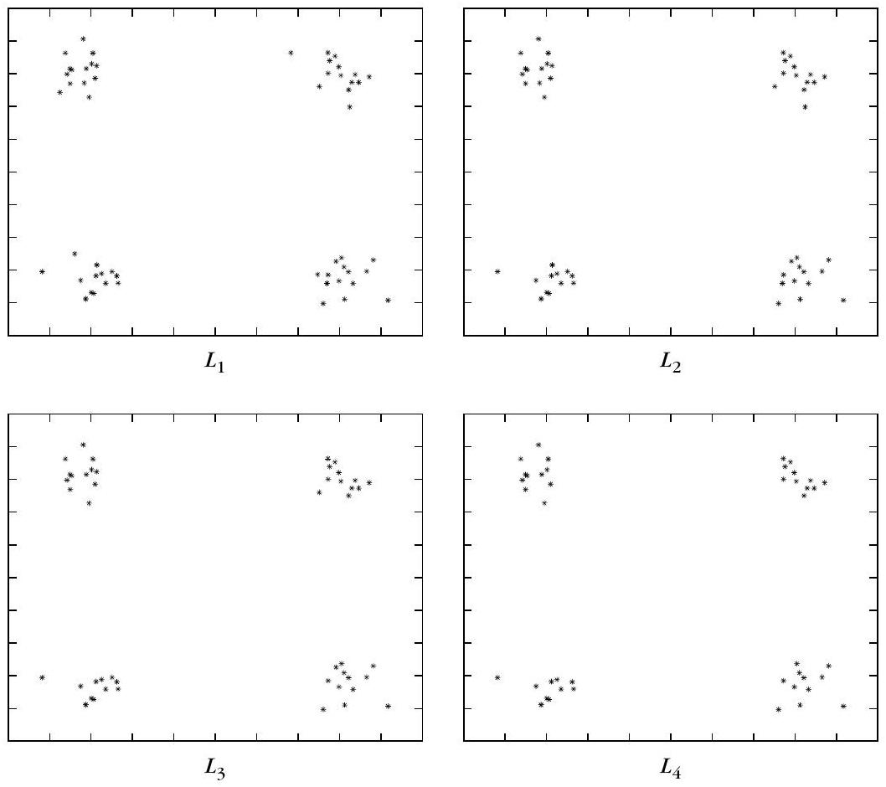
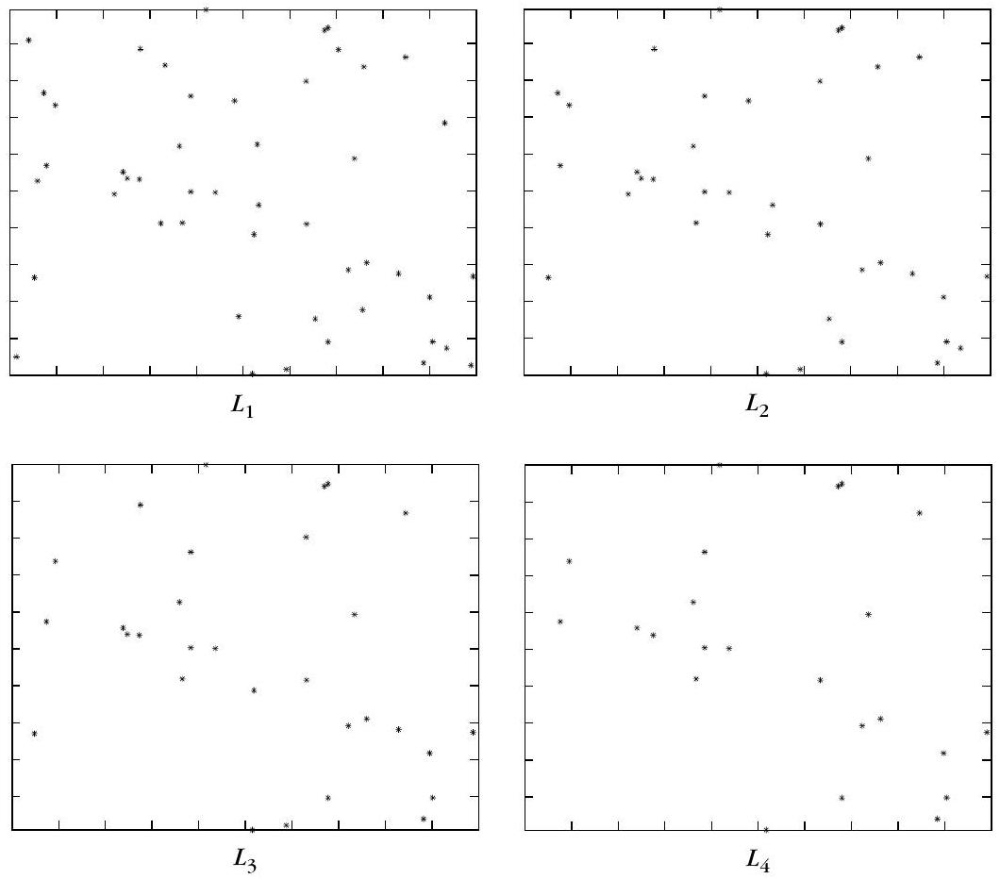
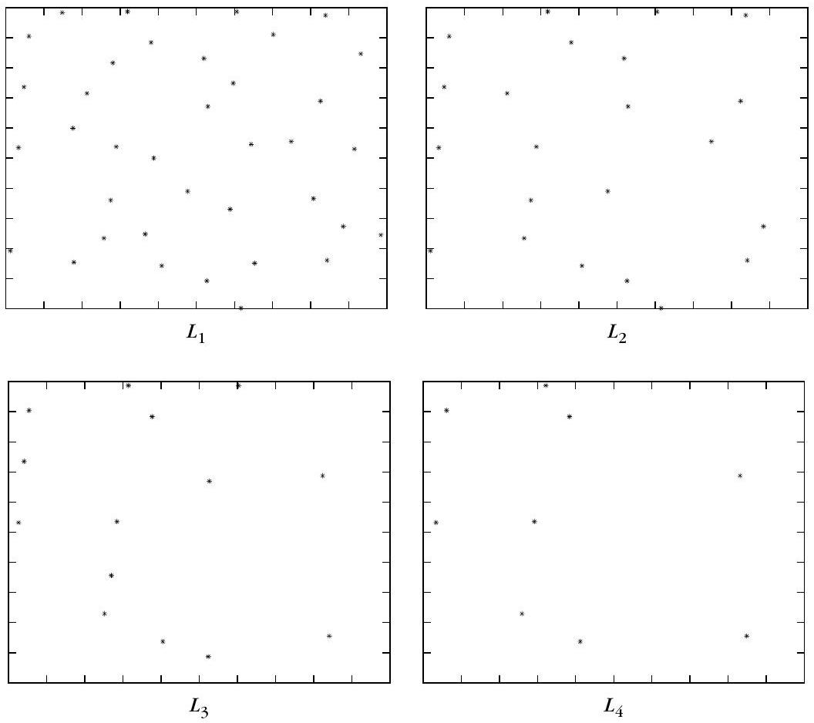
Example 16.10 對叢集／隨機／規則資料，稀疏分解得到的層數分別是？
關於稀疏分解層與 $P$ 統計（式 16.63–16.64），下列何者正確？